Çok Modluluk ve Gerçek Zamanlı Etkileşim¶
Önceki bölümler Agent'ın metin dünyasındaki tasarımını ele aldı — context, araçlar ve kod aracılığıyla dijital sistemlerle etkileşim. Ancak Agent'ın etkileşime girdiği şeyler metin ve API'lerden ibaret değildir. Agent'ın kullanıcının sesli komutunu anlaması, ekranda doğru düğmeyi bulup tıklaması ya da bir robot kolunu bir nesneyi hassasça kavrayacak biçimde yönetmesi gerektiğinde, bambaşka bir alana girer: çok modlu gerçek zamanlı etkileşim — saf metin girdi-çıktısından çok modlu algı ve gerçek zamanlı yanıta genişleme, Agent'ın "diyalog kutusundan" çıkmasının kilit adımıdır. "Çok modluluk" dediğimiz şey, yalnızca metni değil, birden fazla bilgi biçimini — yazı, ses, görüntü, video, eylem — aynı anda işlemektir.
Önce bu bölümün sınırlarını çizelim. Statik görüntü ve doküman anlama — bir ekran görüntüsüne bakmak, bir grafiği okumak, bir PDF'i ayrıştırmak — önceki bölümlerdeki Agent pratiğine zaten birer algı aracı olarak doğal biçimde yerleşti: bugünün çok modlu büyük modelleri için bu tür "bir kez girdi, bir kez anlama" görevleri görece olgunlaşmıştır ve özel bir mimari tasarım gerektirmez. Bu bölüm başka bir problem sınıfına odaklanıyor: gerçek zamanlılığın çok modlu problemi zorlaştırdığı üç senaryo — sesli diyalog, GUI kullanımı ve robot kontrolü. Bu senaryolarda girdi sürekli akar, çıktı ise katı bir zaman bütçesi içinde verilmek zorundadır; mimari tasarım bu yüzden nitelik değiştirir. Sürekli görsel akışın (videonun) gerçek zamanlı anlaşılmasına gelince, bu satırların yazıldığı tarih itibarıyla Agent'lar açısından hâlâ açık bir problemdir — bu bölümün Computer Use kısmında tartışılan kare kare ekran görüntüsü sınırlılığı ile bölüm sonundaki düşünme soruları bu konuya geri dönecek. Bir sınır daha çizmek gerekiyor: çok modlu üretim (görüntü üretimi, video üretimi) bu kitabın çerçevesinde sıradan bir tool calling'den ibarettir (Bölüm 5'teki multimedya üretimi kısmında ele alındı); Agent onu harici bir araç olarak kullanır, bu bölümün çözmeye çalıştığı gerçek zamanlı etkileşim zorluklarını içermez ve bu nedenle bölümün ana hattının dışında kalır.
Sesli etkileşim, Computer Use ve robot kullanımı ilk bakışta bambaşka üç alana yayılıyor gibi görünür; ama işe girişilince takılınan yerlerin birbirine son derece benzediği fark edilir: hepsi aynı anda birden çok modaliteye ait bilgiyi işlemek zorundadır ve hepsi gecikmeye aşırı duyarlıdır. Sesli konuşmada iki saniyeyi aşan bir duraklama insanı huzursuz eder; robot kontrolünde milisaniye ölçeğindeki bir titreme çarpışmaya yol açabilir. Bu iki kısıt, üç senaryoyu birlikte aynı mimari yöne iter: seri boru hattından (fabrika üretim bandı gibi, bir halka bitmeden sonrakine devredilemez) uçtan uca modele (girdiden çıktıya doğrudan giden, aradaki devir teslim halkalarını ortadan kaldıran tek ve birleşik bir model) doğru.
Bu bölüm şu hat boyunca ilerliyor:
- Önce "Ses Mimarisinin Üç Paradigması" ile bir koordinat sistemi kuruyoruz — kaskad (VAD-ASR-LLM-TTS boru hattı), uçtan uca tam modlu (Omni; tek model, ama hâlâ sırayla konuşma), full-duplex (Moshi, GPT-Live; dinlerken konuşma) — ve "VAD'nin tur varsayımından nasıl kurtulunur" ekseni boyunca her halkanın gecikmesini ve ödünleşimlerini sırayla açıyoruz; kaskad kısmında ayrıca VAD + ASR'nin yerine akışlı konuşma algısının nasıl konulacağı anlatılıyor.
- Sonra düşünme mimarisinin "gerçek zamanlı yanıt" ile "derin düşünme" arasındaki çelişkiyi nasıl uzlaştırdığına bakıyoruz: hızlı ile yavaşın basitçe paralel çalıştırılmasından, arka plandaki reasoning modelinin "akıl hocası" rolünü üstlendiği ayrıştırma hattına (GPT-Live'ın devretmesi, Pine AI vb.), oradan da Step-Audio R1'in düşünmeyi tek bir modelin içine "içselleştirdiği" düşünürken konuşmaya.
- Ardından daha insana benzeyen konuşma sentezinin yürütme katmanına getirdiği iyileştirmeleri tartışıyoruz.
- Son olarak bakışı Computer Use'a (yapay zekânın bilgisayar ekranını bir insan gibi kullanması) ve robot kullanımına genişletip aynı gecikme ve çok modluluk problemlerinin bu iki senaryoda nasıl belirdiğini görüyoruz.
Bunların içinde, teoriye daha yakın duran ve senaryolar arasında taşınabilen iki noktayı özellikle vurgulamak gerekir: düşünme mimarisi (hızlı ve yavaş iki düşünme takımının nasıl iş birliği yaptığı) ve ondan türeyen hızlı-yavaş arayüzü (Latent Bridge; hızlı ve yavaş modeller arasında metin dışında başka ne aktarılabilir). Bunlar ses senaryosundan yola çıksa da yalnızca sese hizmet etmiyor — ilerideki Computer Use ve robot kısımlarında da "ne zaman yavaş bir akıl hocasına başvurmalı" sorusuyla karşılaşılacak; okurun bunlara ayrıca dikkat etmesinde yarar var.
Ses: En Doğal İnsan-Makine Arayüzü¶
Sesli Agent'ın mimarisini parçalarına ayırmadan önce bir adım geri çekilip sesin kendi değerine bakalım. İnsanın bilgisayarla kurduğu etkileşim biçimleri arasında ses, bant genişliği en yüksek ve en doğal olanıdır: normal konuşma hızı yazma hızının yaklaşık dört katıdır ve ne elleri ne de gözü meşgul eder. Tam da bu yüzden ses, ikincil bir girdi yöntemi olmaktan çıkıp pek çok kişinin günlük çalışmasında ana etkileşim arayüzü hâline geliyor — sabahtan akşama kadar harf harf klavyeye vurmak yerine doğrudan Agent'a konuşmak.
Araç düzeyine inildiğinde bu hatta kabaca iki tür ürün var. Birincisi sesli giriş araçlarıdır (örneğin Typeless): söyleneni gerçek zamanlı olarak yazıya döker ve herhangi bir uygulamaya aktarır; özünde klavye girdisinin yerini alır. İkincisi sesli Agent'lardır (örneğin Pine, ChatGPT Voice): kullanıcı onlarla doğrudan konuşarak birlikte çalışır; ses hem girdidir hem de etkileşimin kendisidir. İkisinin de en tipik ileri düzey kullanımı, giriş bölümünde anılan whisper coding'dir — kodlama ya da araştırma Agent'ını konuşarak yönetmek: geliştirici niyetini anlatır, Agent'la defalarca tartışır, kodlamayı ve deneyleri de Agent yürütür; bu kitabın yazar ekibinin on küsur makalesi tam olarak bu yolla tamamlanmıştır.
Şunu belirtmek gerekir: bu bölümde bundan sonra tartışılan ses mimarisi aynı anda iki yöne birden hizmet eder — kullanıcının Agent'a konuşması (insan-makine arayüzü olarak) ve Agent'ın kullanıcı adına dış dünyayla konuşması (örneğin telefonla pazarlık etmesi). İkisinin ardında da aynı gerçek zamanlı ses teknolojisi vardır. Şimdi ses mimarisinin üç paradigmasından başlayalım.
Ses Mimarisinin Üç Paradigması¶
Sesli Agent'ların teknik evrimini netleştirmek için elverişli bir koordinat sistemi, OpenAI'ın 2026'da GPT-Live'ı yayımlarken ortaya koyduğu üçlü ayrımdır1 — bu ayrım, ChatGPT sesinin kendi geçtiği üç mimari kuşağa birebir denk düşer:
- Kaskad (Cascaded): Konuşma tanıma (ASR), büyük dil modeli (LLM) ve konuşma sentezi (TTS) olmak üzere üç modeli tek bir boru hattına dizmek; bayrak elden ele geçer. İlk ChatGPT Voice tam da böyleydi: insanın bir öncü modelle ilk kez "konuşabilmesini" sağladı, ama bilgi modeller arasında aktarılırken kayboluyor, yanıtlar yavaş ve yavan kalıyordu.
- Uçtan uca tam modlu (Omni): Tek bir modelle doğrudan "sesi dinle, yanıtı düşün, söyle" yaparak üç aşamayı birleştirmek; gecikme daha düşüktür, prozodi ve duygu gibi metin dışı bilgiler korunur. Ama bu model de yine "sırayla konuşmayı" varsayar — konuşmaya başlamak için kullanıcının duraklamasını bekler, tur değişimini ise sessizliğe bakarak karara bağlar; kısacık bir duraklama ya da arka planda bir gürültü "konuşması bitti" diye yanlış yorumlanabilir ve model araya girmemesi gereken yerde araya girer. ChatGPT'nin Gelişmiş Ses Modu (Advanced Voice Mode) bu kuşağa aittir; OpenAI buna "tur tabanlı ses modelleri (turn-based)" derken sektör, modelin yeteneğine bakarak daha çok "tam modlu (Omni)" model demeyi tercih eder (örneğin Qwen3-Omni); iki ad da aynı şeyi anlatır.
- Full-duplex / etkileşimli (Full-Duplex / Interactive): Model dinlerken konuşur, girdi ile çıktıyı aynı anda işler ve saniyede pek çok kez "konuşmalı mı, dinlemeli mi, susmalı mı, araya girmeli mi, yoksa bir araç mı çağırmalı" kararını verir; "sırayla konuşma" varsayımını tamamen ortadan kaldırır. 2024'te Kyutai'nin Moshi'si araştırma cephesindeki ilk işaretti; 2026'da OpenAI'ın GPT-Live'ı bunu 150 milyon kullanıcı ölçeğine taşıdı.
Bu üç kuşağın içinden aslında tek bir ana hat geçer: "sırayla konuşma" varsayımından, yani VAD'nin (Voice Activity Detection, konuşma etkinliği algılama) turlara ilişkin tahmininden nasıl kurtulunacağı. Kaskad da Omni de turları ayırmak için hâlâ VAD'ye bağımlıdır; turun kendisini tamamen ortadan kaldıran yalnızca full-duplex'tir. Sonraki üç kısım bu eksen boyunca sırayla ilerliyor. Üç paradigma, eskinin yerini yeninin alması gibi basit bir ardışıklık değildir; farklı gecikme ve maliyet kısıtları altındaki tasarım ödünleşimleridir ve 2026'nın üretim sistemlerinde uzun süre bir arada var olurlar.
Bunun dışında GPT-Live ikinci bir yapısal değişiklik daha getirdi — "gerçek zamanlı etkileşimi" "derin düşünmeden" ayrıştırmak: arama ya da karmaşık reasoning gerektiren bir problemle karşılaştığında etkileşim modeli görevi arka plandaki öncü modele devreder (yayımlandığı sırada GPT-5.5'e) ve kendisi konuşmayı sürdürür. Bu "hızlı-yavaş iş bölümü" izi, ilerideki "Düşünme Mimarisinde Ödünleşimler" kısmında ayrıca ele alınacak.
Paradigma 1 · Kaskad Boru Hattı (Cascading)¶
Ticari sesli asistanların büyük çoğunluğu — akıllı hoparlörlerden müşteri hizmetleri botlarına kadar — seri bir boru hattına dayanır (Şekil 9-1): konuşma etkinliği algılama (VAD) kullanıcının ne zaman bitirdiğine karar verir → otomatik konuşma tanıma (ASR) sesi yazıya çevirir → büyük dil modeli (LLM) niyeti anlar ve bir yanıt üretir → metinden konuşmaya (TTS) yanıtı seslendirir. Tıpkı bir bayrak yarışındaki gibi, her halka bir öncekinin koşusu bitmeden yola çıkamaz.
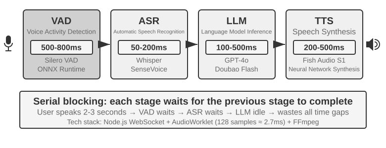
Erken dönem sesli asistanlar bu dört aşamalı seri boru hattını basit bir nedenle benimsedi: konuşma tanıma, dil anlama, düşünme ve konuşma sentezi görevlerinin dördünü birden üstlenebilecek tek bir model yoktu. Modüler mimari, her bileşenin bağımsız olarak geliştirilip iyileştirilmesine imkân tanıyordu. Ama modülerliğin bedeli gecikmenin birikmesidir — her aşama, başlayabilmek için bir öncekinin tamamlanmasını beklemek zorundadır.
VAD, boru hattının başlangıç noktasıdır ve ses akışını sürekli dinler. En kritik tasarım kararı, konuşmanın bitiş noktasının algılanmasıdır (End-of-Speech Detection): genellikle 500-800ms'lik bir kesintisiz sessizlik eşiği belirlenir — kullanıcı yarım saniyeden uzun süre susarsa VAD onun sözünü bitirdiğini kabul eder. Bu, ilk gecikme katmanını getirir ve iki ucu birden tutturmak çok zordur: eşik fazla kısa tutulursa, kullanıcı yalnızca düşünmek için duraklasa bile "bitirdi" sanılır ve cümlesi ortadan kesilir; fazla uzun tutulursa, kullanıcı sözünü bitirdikten sonra bir yanıt gelene kadar yarım saniyeyi aşkın süre boşuna beklemek zorunda kalır.
ASR, ses dalga biçimini yazıya çevirir. Whisper, SenseVoice gibi modeller 5 saniyelik sesi yazıya dökerken, GPU üzerinde küçük-orta ölçekli bir model dağıtıldığında genellikle 50-200ms harcar; daha büyük ölçekli modellerde ya da kaynağı kısıtlı dağıtım ortamlarında bu süre 200-500ms'ye çıkar (Deney 9-3'teki kontrol grubu bu ikinci duruma girer). Daha kritik sorun şudur: VAD'nin bekleyişi ile ASR'nin yazıya dökme süreci boyunca hattın devamındaki LLM tümüyle boştadır; hiçbir bilgi almamıştır ve düşünmeye erkenden başlayamaz.
LLM çıkarım (inference) aşamasında, iyi optimize edilmiş olsa bile context uzunluğuna göre ilk token gecikmesi (TTFT; modelin ilk kelimeyi dökmesine kadar geçen bekleme süresi) çoğu zaman 100-500ms sürer; seslendirilmeye uygun ilk kısa parçanın üretilmesi için ek kod çözme süresi gerekir. reasoning (düşünme) devreye alınırsa model genellikle ilk görünür token'ı çıkarmadan önce iç düşünmesini tamamlar ve bekleme 5-10 saniyeye uzayabilir. Geleneksel, tamamen seri bir uygulama da metni TTS'ye vermeden önce LLM'in yanıtın tamamını üretmesini bekler.
TTS, yanıt metnini sese çevirir; kısa bir parçanın sentezi genellikle 200-500ms sürer. Şekil 9-2, reasoning kullanılmayan kısa bir yanıt üzerinden seri gecikmenin nasıl biriktiğini gösterir: VAD (500-800ms) + ASR (50-200ms) + LLM TTFT (100-500ms) + LLM'in kısa parçayı üretmesi (100-300ms) + TTS (200-500ms), toplam yaklaşık 0,95-2,3 saniye. Bu, ortak bir ölçüm tanımıyla verilmiş açıklayıcı bir aralıktır; gerçek değer girdi ve yanıt uzunluğuna, modele, donanıma, ağa ve yüke de bağlıdır.
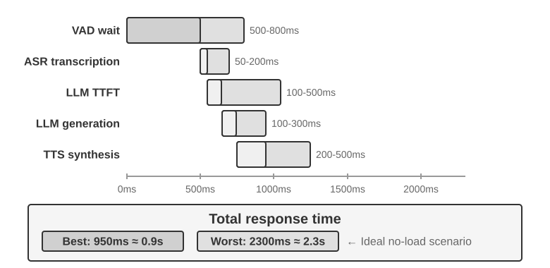
İş üretime döküldüğünde kuyruk gecikmesi durumu iyice ağırlaştırır. Bu, restoranda sıra beklemekle aynı mantıktır: mutfak ne kadar yoğunsa yemeği bekleme süresi o kadar uzar ve bu artış doğrusal değil, sert bir tırmanıştır (Şekil 9-3). Sunucunun önünde hiç bekleyen kuyruk yokken (yani "boştayken") bir isteğin işlenme süresine boştaki gecikme denir. Ama birden fazla istek aynı anda geldiğinde, sonra gelenler kuyrukta beklemek zorunda kalır.
Sezgisel olarak, kullanım oranı yükseldikçe bekleme süresi doğrusal olmayan biçimde fırlar. Kesin matematiksel ilişkiyi kuyruk teorisi verir (burada yalnızca sezgi kurmak için; titiz bir türetmeye gerek yok): toplam gecikme ≈ boştaki gecikme × 1/(1-kullanım oranı). Kullanım oranı, sunucunun meşgul geçirdiği zamanın oranıdır; örneğin %50 kullanım oranı, sunucunun zamanın yarısında istek işlediği, yarısında boşta olduğu anlamına gelir. Kullanım oranı %50 iken gecikme boştaki değerin 2 katına, %80 iken 5 katına çıkar — sunucuların uzun süre yüksek yük altında çalıştırılamamasının nedeni de budur.
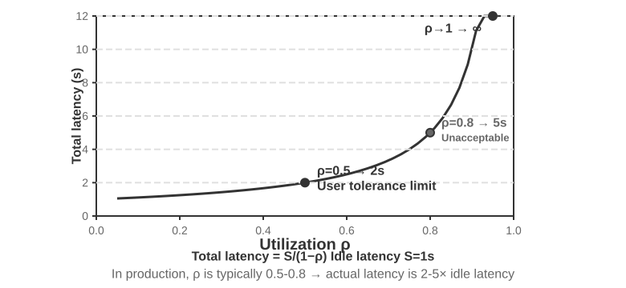
Deney 9-1 ★: Geleneksel Bir Sesli Agent İnşa Etmek
Bu deney, kullanıcının mikrofon üzerinden yapay zekâyla sesli etkileşim kurmasını sağlayan eksiksiz bir gerçek zamanlı sesli diyalog sistemi kurar. Sistem, ön uç ile arka ucun birbirinden ayrıldığı bir mimari kullanır ve WebSocket üzerinden gerçek zamanlı olarak iletişir.
Temel akış katı biçimde seri bir düzeni izler: ön uç mikrofon girdisini yakalar ve WebSocket üzerinden gerçek zamanlı olarak arka uca gönderir. Arka uçta konuşma etkinliği algılaması için Silero VAD modeli çalışır; bu model geleneksel ses düzeyi algılama yöntemlerine kıyasla daha yüksek doğruluk ve daha güçlü gürültü dayanımı sunar. Yaklaşık 500ms'lik kesintisiz sessizlik algılandıktan sonra ses parçasını çıkarıp sonraki işlemlere devreder.
ASR, LLM ve TTS aşamalarının her biri birden fazla sağlayıcı arasında esnek geçişi destekler; geliştirici gecikmeye, doğruluğa ve bölgesel ağ koşullarına göre en iyi bileşimi seçebilir.
Deney 9-2 ★: PineClaw Voice API ile Telefon Agent'ı İnşa Etmek
Deney 9-1, tarayıcı içinde çalışan bir sesli diyalog sistemi kurdu; ama gerçek dünyadaki pek çok Agent görevi gerçek telefon araması yapmayı gerektirir — fatura pazarlığı için müşteri hizmetlerine ulaşmak, restoran rezervasyonu yapmak, sipariş teyit etmek. Bölüm 4, PineClaw'ın Channel mekanizması üzerinden, olay güdümlü mimarinin telefon bildirimlerine verilen yanıt gecikmesini dakika ölçeğinden saniye ölçeğine nasıl indirdiğini göstermişti; bu deney ise sesli aramanın kendisinin nasıl kurulacağına odaklanıyor. PineClaw Voice API (yazar ekibinin geliştirdiği) örneğinde olduğu gibi, bu tür üretim düzeyi telefon sesi API'leri genellikle numara çevirme, IVR gezinmesi (yani "sorgu için 1'e, temsilciye bağlanmak için 0'a basın" türünden telefon menüleri), konuşma ve transkripsiyon adımlarının tümünü kapsar: Agent telefon numarasını, hedefi ve context bilgisini verdikten sonra görüşmenin tamamını sesli Agent yürütür ve yapılandırılmış bir görüşme kaydı döndürür.
Deney Amacı: Gerçek bir telefon araması üzerinden görev tamamlayabilen bir Agent inşa etmek; PineClaw Voice'u bir araç olarak ReAct döngüsüne entegre etmek.
Teknik Yaklaşım: PineClaw Voice Python SDK'sını (
pine-voice) kullanarak Agent'ımake_phone_callaracıyla donatın. Agent kullanıcının görev tanımını alır (örneğin "yarın öğleden sonra 3'e diş kontrolü randevusu al") ve ReAct düşünmesiyle şunlara karar verir: (1) hangi telefon numarasının aranacağı; (2) görüşmenin hedefi ve kilit bilgiler; (3) görüşme bittikten sonra sonucun kullanıcıya nasıl bildirileceği.Agent'ın iş akışı: Kullanıcı "kliniği arayıp yarına muayene randevusu al" der → Agent hangi bilgilere ihtiyaç olduğunu düşünür (kliniğin telefonu, randevu saati, hastanın adı) → bilgi eksikse kullanıcıdan açıklama ister →
make_phone_callaracını çağırır → PineClaw numarayı arar, karşı tarafla konuşur, randevuyu tamamlar → Agent görüşme özetini ve transkripsiyonu alır → sonucu kullanıcıya bildirir.Kabul Kriterleri: Test aramasının başarıyla yapılması (bağlantıyı doğrulamak için önce kendi cep telefonunuzu arayabilirsiniz). Agent'ın görev tanımına dayanarak görüşme parametrelerini kendi başına belirleyebilmesi; görüşme bittikten sonra kilit bilgileri (randevu saati, teyit numarası vb.) doğru biçimde çıkarıp kullanıcıya bildirmesi. API'yi doğrudan kullanmakla Agent'ın ReAct döngüsü üzerinden çağırmak arasındaki farkı karşılaştırın — ikincisi bilgilerin eksik olduğu durumların da üstesinden gelebilir (örneğin kullanıcı telefon numarasını vermediyse önce arama yapmak).
Bu deney, sesli Agent'ların önemli bir uygulama yönünü gösterir: Agent yalnızca kullanıcıyla sesli konuşmakla kalmaz, kullanıcı adına dış dünyayla telefon üzerinden de etkileşime girebilir. PineClaw'ın sesli Agent'ı özel olarak eğitilmiştir; saatler süren beklemelerin, telefon menüsü gezinmelerinin ve karmaşık pazarlıkların üstesinden gelebilir — yapay zekânın sizin yerinize operatörün müşteri hizmetlerini arayıp temsilciye bağlanmayı beklediğini bir düşünün; bunlar tam da geleneksel seri ses hattının altından kalkmakta zorlandığı senaryolardır.
Kaskad Boru Hattında Baştan Sona Akış¶
Şekil 9-2, her aşamanın bayrağı devretmeden önce işini bitirdiği tamamen seri durumu gösterir. Üretim sistemleri genellikle modüler VAD-ASR-LLM-TTS iş bölümünü korur; ancak kullanıcının ilk sesi daha erken duyması için her aşamanın artımlı sonuçları olabildiğince erken vermesini sağlar:
- ASR dinlerken yazıya döker: Akışlı tanıma, kullanıcı konuşurken geçici transkriptleri sürekli üretir ve tanıma hesabının büyük bölümünü konuşma süresinin arkasına gizler. Sonraki bağlam geçici transkripti değiştirebileceği için tur bittikten sonra nihai metnin yine de doğrulanması gerekir.
- LLM çıktıyı akışlı verir ve metni böler: Model üretirken yanıtı noktalama ya da anlama göre seslendirmeye uygun parçalara ayırır ve yanıtın tamamını beklemeden ilk parçayı TTS'ye gönderir. Bu, LLM'in TTFT'sini kısaltmaz veya reasoning'i atlamaz; kazandırdığı şey yanıtın geri kalanının tamamlanmasını beklememektir.
- TTS sesi artımlı sentezler: TTS ilk metin parçasını alınca senteze başlar ve dalga biçiminin tamamı hazır olmadan ses parçaları döndürür. Bundan sonra LLM'in kalan metni üretmesi, TTS'nin sonraki konuşmayı sentezlemesi ve istemcinin aldığı sesi çalması zamanda üst üste binebilir.
Ancak her aşamayı akışlı yapmak, üç modelin aynı konuşma turu üzerinde aynı anda çalışmaya başlaması demek değildir. Tahmine dayanmayan standart bir kaskadda bağımlılıklar sürer: kullanıcı konuşurken ASR çalışabilir; LLM nihai yanıtı ancak tur bittikten ve transkript kararlı hâle geldikten sonra üretir; TTS ise LLM seslendirilebilir ilk metin parçasını verdikten sonra başlayabilir. Gerçekte üst üste binenler “kullanıcının konuşması ile ASR transkripsiyonu” ve “LLM'in yanıtın kalanını üretmesi ile TTS sentezi/oynatımıdır”; ASR, LLM ve TTS hesaplarının baştan sona tümü paralel değildir.
Daha agresif sistemler erken/spekülatif üretim (preemptive/speculative generation) uygular: yeterince kararlı bir kısmi transkripte dayanarak LLM'i erkenden başlatır; sonraki transkript değişirse üretimi iptal eder, yeniden başlatır ya da düzeltir. Konuşma da erkenden sentezlenebilir, ancak Agent'ın kullanıcı sözünü bitirmeden araya girmemesi için oynatma genellikle tur onayını bekler. LiveKit Agents ve Pipecat gibi çerçeveler hem sıradan akışlı kaskadı hem de bu erken başlatma stratejilerini taşıyabilir. ASR ile LLM'in gerçekten üst üste binmesi, kısmi transkriptin kaydedilmesi, geçersiz kılınması ve geri alınması mekanizmalarının açıkça uygulanmasına bağlıdır; yalnızca stream seçeneğini açmak bunu otomatik olarak sağlamaz.
Sıradan akışlı işleme de VAD'nin sessizlik beklemesini ve tur kararının kendisini ortadan kaldıramaz. Akışlı ASR bu bekleme sırasında zaten çalışmaktadır; tur kararının engellediği şey nihai transkriptin kaydedilmesi ve yanıtın oynatılmasıdır. Erken üretim hesabın bir bölümünü gizleyebilir, ancak sistemin ne zaman güvenle konuşabileceğine yine karar vermesi gerekir. Bu gecikmeyi daha da azaltmak, en öndeki algı ve bitiş noktası kararının iyileştirilmesini gerektirir.
Akışlı Konuşma Algısı: VAD + ASR'nin Yerini Almak¶
Bu algı ön ucu iki kademeden oluşur: VAD kullanıcının sözünü bitirip bitirmediğine karar verir, ASR sesi yazıya döker. Tamamen seri mimaride ikisi birlikte hattın devamının ne zaman başlayacağını ve hangi girdiyi alacağını belirler. Akışlı mimaride ASR daha erken çalışmaya başlasa da nihai metnin kaydedilmesi ve yanıtın ne zaman başlayacağı bitiş noktası kararına bağlı kalır. Geleneksel VAD + ASR kaskadının üç temel sorunu vardır:
- Gecikme birikimi: VAD, kullanıcının sözünü bitirdiğini teyit etmek için 500-800ms sessizlik beklemek zorundadır; çünkü geleceği öngöremez ve "gerçekten bitirdi" ile "sadece düşünmek için duraksadı" ayrımını ancak "biraz bekleyerek" yapabilir
- Bilgi kaybı: VAD yalnızca "ses var / ses yok" gibi ikili bir sinyal üretir; duygu değişimleri, tondaki iniş çıkışlar, tereddütlü duraklamalar, arka plandaki ortam gibi bütün akustik ayrıntılar kaybolur. Yanlış karar sorunu karmaşık ortamlarda özellikle belirginleşir — kullanıcının biraz uzunca duraklaması "bitirdi" sanılır ve cümle ortadan kesilir, arka plandaki gürültü yanlışlıkla tetikleyince kimse konuşmuyorken sistem işlemeye başlar, kullanıcının onaylarcasına söylediği bir "hı hı" sesinin araya girme isteği mi yoksa onay mı olduğu da anlaşılamaz
- Doğruluk düşüşü: VAD sürekli sesi birbirinden bağımsız parçalara böler ve her birini ayrı ayrı tanınmak üzere ASR'ye verir; böylece bağlamın sürekliliği bozulur. Doğru tanınması için öncesine ve sonrasına ihtiyaç duyan içeriklerde (e-posta adresleri, marka adları, kişi adları, özel isimler) hata oranı belirgin biçimde yükselir — örneğin kullanıcı e-posta adresini "john dot smith at gmail dot com" diye söylediğinde, "john" ile "smith" farklı parçalara düşerse "smith" bağlam eksikliği yüzünden "miss" olarak yanlış tanınabilir
Akışlı konuşma algısı modelleri köklü bir çözüm sunar. Önce "akışlı" teriminin teknik anlamını netleştirelim: bir konuşma modelinin akışlı işleyip işleyemeyeceği, kodlayıcısının nedensel (causal) ya da parçalı (chunked) olmasına (yalnızca gelmiş olan sese dayanması, kaydın tamamını görmeye ihtiyaç duymaması) ve kod çözmenin artımlı olmasına (her küçük ses parçası geldiğinde sonucun bir bölümünü üretmesi) bağlıdır. Whisper akışlı çalışamaz; bunun nedeni kod çözme biçimi değildir — kod çözmesi zaten öz bağlanımlıdır (autoregressive) — nedeni, kodlayıcısının çalışmaya başlayabilmek için eksiksiz bir ses parçasına (sabit 30 saniye; kısaysa dolgu yapılır) ihtiyaç duymasıdır. Şunu da belirtmek gerekir: akışlı tanımanın kendisi yeni bir teknoloji değildir. RNN-T ve akışlı Conformer'ın temsil ettiği geleneksel akışlı ASR, sektörde çoktan büyük ölçekte konuşlandırılmıştır — telefonlardaki gerçek zamanlı altyazılar ve klavye uygulamalarındaki sesli giriş bu tür modelleri kullanır — ve bunların LLM'lerle bir ilgisi yoktur.
Bu kısmın odaklandığı şey yeni bir hattır: LLM tabanlı akışlı işitsel algı — açık kaynak bir LLM'i omurga alıp post-training yapmak ve modelin doğrudan sürekli ses akışından anlam düzeyinde yanıtlar üretmesini sağlamak; böylece "tanıma" ile "anlama" aynı modelde birleşir. Bu, geleneksel akışlı ASR'nin bir üst sürümüdür, akış teknolojisinin icadı değil: artımlı tanımanın gecikmesi yine tek adımlık çıkarım süresi ölçeğinde (birkaç on ila yüz-iki yüz milisaniye) kalır, ama modelin gördüğü şey artık VAD'nin doğradığı yalıtık parçalar değil, konuşmanın başından şu ana kadar uzanan kesintisiz ses akışıdır. Model eksiksiz bağlam üzerinden In-Context Learning (bağlam içi öğrenme) yapabilir; kullanıcının kişisel bilgilerini, teknik terimleri ve telaffuz alışkanlıklarını tanıma doğruluğu belirgin biçimde artar.
Bu hattın bir diğer kilit üstünlüğü, LLM'in dünya bilgisini ve sağduyusal reasoning yeteneğini devralmasıdır — nihayetinde omurga model devasa miktarda metin görmüştür. Örneğin model, "apple" sözcüğünün ardından "tanıtım etkinliği" geliyorsa bunun büyük olasılıkla meyveyi değil Apple şirketini kastettiğini bilir; bu bilgi takviyesi sayesinde tutar, yer adı, marka adı gibi yüksek değerli bilgilerin tanınma doğruluğu geleneksel ASR'nin çok üstüne çıkar. Bu hattın hayata geçirilebilir modelleri de var; örneğin Fixie'nin Ultravox'u sesi doğrudan bir LLM omurgasına verip metin ve anlamsal token üretir. Bu kısmın deneyinde kullanılan Qwen2-Audio ile Alibaba'nın Qwen2.5-Omni'si de aynı türden ses-yerel (audio-native) modellerdir.
Yine de VAD'nin yerini almak için tam ölçekli bir ses büyük modelini devreye sokmak şart değildir. Amaç yalnızca birinci sorunu çözmekse — kullanıcının sözünü gerçekten bitirip bitirmediğine karar vermek — daha hafif bir yol daha var: bu "tur kararını" doğrudan tanıyıcının kendi içine yerleştirmek2. Yöntem şu: çok küçük, açık kaynak bir akışlı tanıma modeline bir LoRA eklenir; model bir yandan yazıya dökerken bir yandan da anlamı ve sessizliği birlikte değerlendirerek "bu cümle tam bir anlamı ifade etmeyi tamamladı mı" kararını verir — çünkü tur içi duraklamalar (telefon numarası söylenirken verilen bir es) çoğu zaman turlar arası boşluklardan bile uzundur; yalnızca sessizlik eşiğine yaslanmak kaçınılmaz olarak iki ucu da kaçırır. Daha ilginç sonuç şudur: modelin "sözü devralmalı mı, almamalı mı" konusunda sürekli gidip gelmesinin kökeni çoğu zaman model mimarisi değil, eğitim etiketlerinin "tanrı bakışıyla" işaretlenmiş olmasıdır — etiketleme sırasında karar anından sonra ortaya çıkan ses de kullanılmıştır, oysa canlıdaki model geleceği hiçbir biçimde göremez. Her etiket "yalnızca karar anında elde edilebilen bilgiyle" yeniden işaretlendiğinde bu sahte gidip gelme ortadan kalkar. Bu, Bölüm 7'deki post-training tartışmasının bir yargısını da yankılar: çoğu zaman veri, mimariden daha kritiktir. Bu daha hafif hattın üretim düzeyinde uygulamaları da mevcut: Deepgram'ın Flux'ı ve AssemblyAI'ın Universal-Streaming'i uç nokta ve tur kararını doğrudan akışlı tanıma modelinin içine gömer ve özellikle sesli Agent'lar için tasarlanmıştır; açık kaynak tarafında ise LiveKit ve Pipecat'in sunduğu anlamsal tur algılama modelleri bulunur.
Modelin ürettiği yalnızca metin değildir; bir dizi akustik olay özel işaretini de içerir — bunlar model eğitimi sırasında tanıtılan özel token'lardır ve model, karşılık gelen akustik olayı algıladığında bunları kendiliğinden üretmeyi öğrenmiştir. Yaygın türleri şunlardır:
<speak_start/end>: Konuşmanın başlangıcını ve bitişini basit bir sessizlik algılamasıyla değil, anlam ile akustiğin birlikte değerlendirilmesiyle belirler<interrupt>: Kullanıcının gerçekten araya girmek mi istediğini, yoksa yalnızca onay mı verdiğini ya da arka plan gürültüsünden mi etkilendiğini ayırt eder<emotion:happy/frustrated>: Duygu işaretleri<laugh>/<sigh>: Gülme, iç çekme gibi paralinguistik sinyaller<music>/<noise>: Ortam sesleri
Bu işaretler metin token'larıyla birlikte birleşik bir olay akışı oluşturur ve hep birlikte düşünme katmanına verilir.
Input audio: "Şey, aslında bence... yok dur, bir daha düşüneyim."
Model output stream:
<speak_start> Şey, <emotion:hesitant> aslında bence...
<silence:500ms> yok dur, <emotion:confident> bir daha düşüneyim <speak_end>
Modelin ürettiğinin yalnızca metin transkripsiyonu olmadığına dikkat edin; konuşma olayı işaretleri de (konuşmanın başlaması/bitmesi, duygu değişimi, sessizlik aralıkları) buna dahildir. Agent çerçeveleri bu işaretlerden yararlanarak daha doğal etkileşimler kurabilir — örneğin kullanıcının tereddüt ettiğini algıladığında kendiliğinden seçenek sunmak gibi.
Deney 9-3 ★: Qwen2-Audio ile Akışlı Konuşma Algısını Simüle Etmek
Önce deney tasarımını açıklamak gerekiyor: Qwen2-Audio'nun kendisi, girdiyi bütün hâlinde alan, akışlı olmayan bir modeldir. Bu deney parçalı girdiyle akışlı işlemeyi simüle eder — sürekli ses akışı sabit uzunlukta küçük parçalara bölünür, her parça o ana kadar birikmiş ses bağlamıyla birlikte modele verilir, model adım adım metin ve akustik olay token'ları (gülme, duraklama gibi dil dışı sinyaller) üretir; her parçanın modele verilmesinden metnin çıkmasına kadar geçen gecikme ölçülür. Burada kritik bir bedel var: Qwen2-Audio'nun kodlayıcısı artımlı değildir; her yeni parçayı işlerken o ana kadar birikmiş sesin tamamını baştan yeniden kodlamak zorundadır. Dolayısıyla konuşma uzadıkça ve biriken ses arttıkça tek bir parçanın kodlama gecikmesi de yükselir — "simüle akış" ile "gerçek akış" (artımlı ya da nedensel kodlayıcı kullanan, yalnızca yeni gelen küçük ses parçasını artımlı olarak kodlayan) arasındaki asıl fark tam olarak budur. Bu tasarım, "eksiksiz bağlamı koruyan sürekli algının" getirdiği doğruluk kazancını gösterebilir; ama gecikme rakamları yalnızca parça büyüklüğünü ve çıkarım hızını yansıtır, gerçekten akış için tasarlanmış bir modelin (örneğin parçalı kodlama kullanan Qwen3-Omni'nin) ilk paket gecikmesine denk değildir; ilgilenen okurlar bu deneyi ikinci tür bir modelle yeniden yapabilir. Karşılaştırma düzeneği geleneksel VAD + Whisper ASR boru hattıdır. Üç tür senaryo test edilir: normal konuşma, duraklamalı uzun cümle ve arka plan gürültüsü içeren konuşma.
Sonuçlar: Parçalı simülasyon düzeneğinde artımlı tanıma gecikmesi yüz-iki yüz milisaniye ölçeğinde tutulabilir (kesin değer parça uzunluğuna ve donanıma bağlıdır); geleneksel düzenekte ise VAD'nin bitişi teyit etmesini (600ms) beklemek, üstüne Whisper çıkarımını (bu deneyin yapılandırmasında yaklaşık 200-500ms) eklemek gerekir; toplamı 800-1100ms'dir. Duraklamalı senaryoda VAD, ilk uzun duraklamada "bitti" diye yanlış karar verdi ve cümleyi iki parçaya bölüp ayrı ayrı tanıdı; "大概两点左右" (yaklaşık saat iki civarı) bağlam eksikliği yüzünden "大概零点左右" (yaklaşık saat sıfır civarı) olarak yanlış tanındı. Parçalı düzenek ise eksiksiz bağlamı koruyup cümlenin tamamını doğru tanıdı. Arka plan gürültüsü senaryosunda Qwen2-Audio, gürültünün varlığını işaretlemek için
<|noise|>token'ı üretti ama tanımayı kesmedi; geleneksel VAD ise gürültüyle yanlışlıkla tetiklenip tanıma sürecinin erkenden başlamasına yol açtı.
Paradigma 2 · Uçtan Uca Tam Modlu Modeller (Omni)¶
Kaskad boru hattının bütününe dönüp bakalım: algı ön ucu akışlı konuşma algısıyla değiştirilmiş olsa bile, sonuçta "dinleme, düşünme, konuşma" üçlüsünü birbirinden bağımsız üç modele dağıtır ve bunlar birbirine ayrık bir arayüzle bağlanır. Bu arayüz ne kadar genişletilirse genişletilsin, taşıdığı şey birkaç anlamsal token ile serpiştirilmiş birkaç akustik işaretten ibarettir — konuşanın o andaki duygusu, ses tonu ve tonlaması ile arka plandaki ortam sesleri ve müzik, devir teslim sırasında büyük ölçüde kaybolur; üstelik üç aşama ayrı ayrı eğitilip ayrı ayrı optimize edildiğinden birbiriyle uyum içinde çalışmaları da zordur. Uçtan uca tam modlu modeller (Omni) ise başka bir yol açar — tek bir modelle doğrudan sesi "dinler", yanıtı "düşünür" ve onu "söyler"; üç aşamayı tek bir bütünde birleştirir (Şekil 9-4). Eğitim verisi yeterli olduğu sürece modelin içindeki gizli uzay (Latent Space), bu paralinguistik bilgileri metnin ötesinde doğrudan üretim tarafına aktarabilir: gecikme daha düşük olur, prozodi ve duygu da korunur. Ödünleşim şudur: kaskad boru hattının modülleri nettir, her aşama bağımsız olarak ayarlanabilir ve yorumlanabilirliği iyidir; uçtan uca modelin gecikmesi daha düşüktür ve metin dışı bilgiyi koruyabilir, ama bunun bedeli daha büyük eğitim verisi ihtiyacı ve daha zayıf yorumlanabilirliktir.
Sık gözden kaçan bir boyutu daha eklemek gerekir: uçtan uca yaklaşımın üstünlüğü esas olarak gecikmede ortaya çıkar; doğruluk boyutunda mutlaka öne geçmez. Karşılaştırmaya değer bir düzenek öz kaskaddır (self-cascade) — aynı model önce sesi yapılandırılmış metne döker, sonra bu metin üzerinden reasoning yapar; tek seferde uçtan uca yanıt vermeye kıyasla hangisinin daha doğru olduğu göreve bağlıdır. Kural şöyle özetlenebilir: yanıtı esas olarak anlamsal içerik (yani "ne söylendiği") belirliyorsa ve aradaki metin göreve ilişkin bilgiyi yeterince taşıyabiliyorsa, öz kaskadın doğruluğu uçtan uca yaklaşımla eşdeğer, hatta ondan daha iyidir; bu üstünlük özellikle algı yeteneği zayıf modellerde belirgindir. Tersine, yanıt metinle temsil edilmesi güç dil dışı ipuçlarına (tonlama, duygu, ortam sesi) yüksek oranda bağlıysa, uçtan uca yaklaşımın belirgin üstünlüğü ortaya çıkar. Daha da önemlisi, hangisinin üstün geleceği görevin niteliğine bakılarak önceden belirlenebilir; bunu basitçe "uçtan uca daha ileri bir yöntemdir" diye açıklamak yanlıştır. Buradan bir tasarım ilkesi de türetilebilir: performansı belirleyen şey çoğu zaman bir ara temsilin, yani bir darboğazın, devreye girip girmemesi değil, o darboğazın taşıdığı bilgidir — aradaki metin salt transkripsiyondan çıkarılıp paralinguistik işaretler (duygu, konuşma hızı, ortam sesi) taşıyan yapılandırılmış bir temsile yükseltilirse, uçtan uca modelin mevcut doğruluk üstünlüğü genellikle daralır. Bu da yukarıdaki "Akışlı Konuşma Algısı" kısmında savunulan "algı katmanı yalnızca saf metin üretmemelidir" düşüncesiyle aynı damardan gelir3.
Ama Omni ne kadar güçlü olursa olsun, özünde üç modeli tek bir modelde birleştirmekten ibarettir; "sırayla konuşma" varsayımını ortadan kaldırmaz: söz hakkını paylaştırmak için hâlâ VAD'ye bağımlıdır — kullanıcının sesini algılar algılamaz susar, kullanıcı sessizleşince hemen söze başlar. Böylece o tanıdık sorun yeniden belirir: kullanıcı bir dizi rakam okurken arada kısa bir es verir, Omni de karşısındakinin sözünü bitirdiğine hükmedip zorla araya girer. Yukarıda anlatılan akışlı konuşma algısı, tur kararını sessizlik süresinden anlam düzeyine yükselterek bu tür yanlış kararları büyük ölçüde azaltabilir; ama bu, sonuçta "tur" çerçevesi içinde yapılan yerel bir onarımdır ve sıranın kendisini ortadan kaldırmaz. Bu çıkmazdan kökten kurtulmak için artık "tur" çerçevesi içinde yama yapmak yetmez; modelin dinlerken konuşması, ne zaman söze başlayacağına kendisinin karar vermesi ve "sıra kimde" diye katı bir geçişin hiç bulunmaması gerekir.
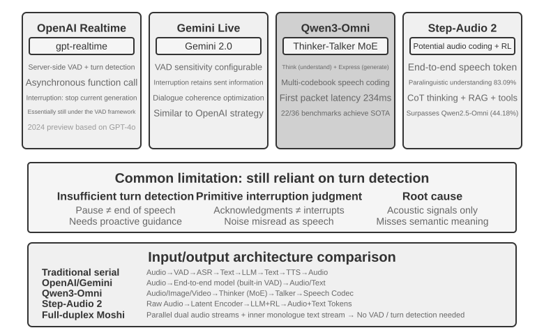
OpenAI Realtime API, model düzeyinde uçtan uca olana yakındır (model sesi doğrudan, kendi içinde işler); ama etkileşim kontrolü düzeyinde hâlâ geleneksel VAD'ye bağımlı olduğundan, tam uçtan uca mimariye geçiş yolundaki bir ara çözümdür. Başlangıçta (2024'teki preview sürümünde) GPT-4o üzerinde çalışıyordu; 2025'te resmen GA olduktan sonra bağımsız ve sese özel bir model olan gpt-realtime'a geçti (artık GPT-4o'nun bir modu değil, gerçek zamanlı ses için ayrıca optimize edilmiş bir modeldir). API varsayılan olarak sunucu tarafı VAD'yi devreye alır ve kullanıcının ne zaman konuşmaya başlayıp ne zaman bitirdiğini kendiliğinden belirler. Konuşma sırasında araya girmeyi destekler — kullanıcının söze başladığını algıladığı anda o sırada üretilen sesi hemen durdurur; tıpkı yüz yüze sohbet eden iki kişiden biri araya girdiğinde diğerinin doğal olarak susması gibi. gpt-realtime ayrıca asenkron fonksiyon çağırmayı da getirdi: model bir yandan aracın sonuç döndürmesini beklerken bir yandan kullanıcıyla konuşmayı sürdürebilir ve araç gecikmesini konuşmanın içine gizleyebilir. Bunların hepsi deneyimi iyileştirir, ama özünde hâlâ VAD çerçevesi içinde yapılan iyileştirmelerdir. Gemini Live API benzer bir yaklaşım izler; VAD hassasiyetinin yapılandırılmasını destekler ve araya girme durumunda konuşmanın tutarlı kalması için önceden gönderilmiş bilgileri korur.
Qwen3-Omni, Thinker-Talker mimarisini kullanır: düşünmeyi (anlama ve reasoning) ifadeden (konuşma üretiminden) ayırıp iki özelleşmiş modüle böler ve metin, görüntü, ses ile videoya ilişkin algıyı ve üretimi tek çatı altında birleştirir. Qwen3-Omni'nin düşük ilk paket gecikmesi, üretim tarafındaki (Talker) mimariden gelir: ses token'larını çok kod kitaplı öz bağlanımlı bir biçimde adım adım üretir, nedensel (causal) bir codec de bu token'ları artımlı olarak dalga biçimine çözer; böylece düşünme modülü metni üretir üretmez Talker hemen ardından akışlı olarak konuşma sentezleyebilir, yanıtın tamamının üretilmesini beklemesi gerekmez. Resmî rapora göre soğuk başlangıçtaki teorik ilk paket gecikmesi 234ms'ye kadar düşüyor; 19 dilde anlamayı ve 10 dilde üretimi destekliyor, 36 ses-video benchmark'ının 22'sinde önde gidiyor.
Step-Audio 2 farklı bir yol izler: ham ses girdisini doğrudan işler, hem metin hem ses üretir ve gerçek anlamda uçtan uca sesli diyalog gerçekleştirir. Yalnızca ne söylendiğini (anlamsal bilgiyi) anlamakla kalmaz, nasıl söylendiğini de algılar — paralinguistik bilgiyi (Paralinguistic Information): konuşanın duygusunun sevinç mi öfke mi olduğunu, konuşma hızının aceleci mi tereddütlü mü olduğunu, tonlamanın yükselen mi alçalan mı olduğunu — ve arka plandaki ortam sesleriyle müziği. Düşünme ve pekiştirmeli öğrenme yoluyla ifade gücü yüksek yanıtlar üretir; ayrıca bir RAG mekanizmasını ve harici araçları (web araması, ses araması) da bünyesine katar. Step-Audio 2 makalesinde bildirilene göre, kendi önerdikleri StepEval-Audio-Paralinguistic paralinguistik anlama benchmark'ında Step-Audio 2'nin doğruluğu %83,09'a ulaşarak aynı dönemin açık kaynak tam modlu modeli Qwen2.5-Omni'nin (%44,18) önüne geçmiş; GPT-4o Audio (%43,45) ve Kimi-Audio (%49,64) değerlerinin de üstünde kalmıştır.
Step-Audio R1, Step-Audio serisinin devamı niteliğindeki çalışmadır; Step-Audio 2'nin uçtan uca sesli diyalog mimarisi üzerine kurularak düşünme yeteneğini doğrudan ses modelinin içine içselleştirmeyi bir adım daha ileri götürür. İkisi aynı teknik hattın ardışık evrimini temsil eder.
Paradigma 3 · Tam Çift Yönlü Etkileşim Modelleri (Full-Duplex / Interactive)¶
Paradigma 2 üç modeli tek modelde birleştirdi, ama "sırayla konuşma" varsayımına sadık kalmayı sürdürdü — ya kullanıcı konuşur ya model; geçiş noktası ise VAD'ye ya da anlama bakılarak tahmin edilir. Oysa bazı senaryolar "bir sen söyle, bir ben söyleyeyim" biçiminde sıralı bir konuşma değildir. Simültane çeviri bunun bir örneğidir: çevirmen konuşmacının cümlesini bitirmesini beklemez; dinlerken zihninde kurar ve bir anlam öbeği aşağı yukarı tamamlandığında hemen çevirisini söyler; dinleme ile çeviri baştan sona üst üste biner. Müziğe eşlik ederek davul vuruşlarına basmayı gerektiren ritim oyunları ise daha da uçtur — kulağın kesintisiz müzik akışını sürekli izlemesi, ellerin her vuruşu tam zamanında yakalaması ve aynı anda bir sonraki vuruşun öngörülmesi gerekir; burada "bir tur" diye bir şey bile yoktur, girdi hiç durmayan kesintisiz bir akıştır. Bu tür görevler tur tur (turn-by-turn) işleyen düzene kökten bir meydan okumadır: dinlemenin, düşünmenin ve eylemin aynı anda gerçekleşmesini isterler; oysa tur düzeninin ön kabulü tam da bu üçünü ardışık zaman dilimlerine yerleştirmektir. Full-duplex modeli, "VAD'den kurtulma" yolunu mantıksal sonuna kadar götürür — "sırayla konuşma" varsayımını doğrudan ortadan kaldırır ve modelin aynı anda, kesintisiz biçimde dinleyip konuşmasını sağlar.
Araştırma cephesindeki ilk işaret Kyutai'nin Moshi'sidir (2024). İki ses akışını (kullanıcının sesi ile modelin kendi sesi) paralel olarak modeller ve üretilen konuşmanın dil kalitesini yükseltmek için buna bir "iç monolog" metin akışı ekler. Her an dinlemede olduğu için üst üste konuşma ve istendiği anda araya girme doğal davranışlar hâline gelir; hiçbir açık araya girme algılama mantığına gerek kalmaz. Uçtan uca gecikmesi yaklaşık 200ms'dir ve insan konuşmasının doğal temposuna yakındır.
2026'da Mira Murati'nin kurduğu Thinking Machines Lab, etkileşim modeli (Interaction Model) adını verdikleri yeni bir kategoriyi önizlemeye açtı4 ve full-duplex'in ardındaki savı açıkça ortaya koydu: etkileşim, VAD gibi harici bir harness olarak modelin çevresine sarılmamalı, modelin kendi içine yerleştirilmelidir — kendi ifadeleriyle, "etkileşimin zekâyla birlikte ölçeklenebilmesi için etkileşimin modelin kendisinin bir parçası hâline gelmesi gerekir". Mimariye indiğinde bu, mikro turlar (micro-turn) demektir: model bir turun tamamının bitmesini beklemez; yaklaşık 200ms'lik dilimler hâlinde sürekli olarak "200ms oku, 200ms üret" yapar ve ses, video, metin akışlarının birbirine örülerek ilerlemesini sağlar. Bu tanecik boyu bilinçli bir uzlaşmadır — sessizliğin, üst üste binmenin ve araya girmenin sürekli akışlar olarak modelin context'inde kalmasını sağlayacak kadar incedir, dolayısıyla uyulması gereken yapay tur sınırları kalmaz; öte yandan birden çok modaliteyi bloklar hâlinde eşzamanlı işlemeye ve gecikmeyi gerçek zamanlı hissedilen aralıkta tutmaya yetecek kadar kabadır. Etkileşim modelin içine alındığı için, "dinlerken konuşma" ve "bakarken araya girme" gibi eskiden ancak özel bir harness ile kurgulanabilen davranışlar artık modelin kendi işidir ve modelle birlikte güçlenir: ilk model olan TML-Interaction-Small üç akışı sıfırdan birlikte eğitilerek öğrendi; kullanıcının bug'lı bir kod parçası yazdığını ya da kadraja birinin girdiğini fark ettiği anda kendiliğinden söze girebiliyor.
Modelin "yavaş düşünmeyi" bağlama biçimi de oldukça temsil edicidir. Etkileşim modelinin kendisi yalnızca konuşmanın canlı kalmasından sorumludur; derin reasoning ya da tool calling gerektiren bir problemle karşılaştığı anda işi arka plandaki daha güçlü bir reasoning modeline devreder — devrettiği şey tek başına duran bir sorgu değil, konuşmanın tüm context'idir. Arka plandaki model reasoning yaparken sonuçlar akış hâlinde geri gönderilir; etkileşim modeli de kullanıcının sözünü kesmeyecek bir an seçip bunları konuşmanın içine doğal biçimde dokur. Bu sırada her zamanki gibi karşılık verir, ek soruları yanıtlar ve sözü elinde tutar. Böylece "düşünmeyen bir modelin gecikmesiyle", "bir reasoning modelinin planlama, araç ve Agent yetenekleri" elde edilmiş olur. Resmî rapora göre TML-Interaction-Small'un (276B parametreli MoE, bunun 12B'si etkin) tur geçiş gecikmesi 0,40 saniyeye kadar iniyor (GPT-realtime-2.0'da yaklaşık 1,18 saniye) ve görsel inisiyatifi ölçen benchmark'larda neredeyse sıfır puan alan rakiplerinin çok önünde yer alıyor; bu satırların yazıldığı tarih itibarıyla hâlâ araştırma önizlemesi aşamasında.
Aynı yıl OpenAI'ın GPT-Live'ı full-duplex'i üretim ölçeğine taşıdı ve ChatGPT sesinin yeni varsayılan modeli olarak dünya geneline yayıldı. Konuşmayı artık birbirinden ayrı mesaj turlarından oluşan bir dizi olarak görmez; girdiyi sürekli işlerken çıktıyı da sürekli üretir ve bu sayede saniyede pek çok kez etkileşim kararı verebilir: konuşmaya başlamak mı, dinlemeyi sürdürmek mi, susmak mı, araya girmek mi, yoksa bir araç mı çağırmak. Dışarıdan görünüşü şudur: kullanıcı düşünürken sözü kapmak yerine sessizce bekler, dinlediğini belli etmek için "hı hı", "evet" gibi onaylayıcı sesler çıkarır ve gerçek zamanlı çeviri gibi dinlerken konuşmayı zorunlu kılan görevlerin de altından kalkar.
GPT-Live de aynı hızlı-yavaş iş bölümü yolunu izliyor — "gerçek zamanlı etkileşimi" "derin düşünmeden" ayrıştırıyor: arama, reasoning ya da daha karmaşık Agent işlemleri gerektiren bir durumla karşılaştığında etkileşimden sorumlu GPT-Live görevi arka plandaki öncü modele devrediyor (yayımlandığı sırada GPT-5.5'e), kendisi konuşmanın akışını sürdürüyor ve arka plandan sonuç geldiğinde onu konuşmanın içine taşıyor. GPT-Live-1 ile mini sürümü arka planda GPT-5.5 Instant'ı kullanırken, Medium ve High kademeleri düşünme özellikli GPT-5.5'i çağırıyor; böylece kullanıcı ihtiyacına göre "hızlı" ile "derin" arasında tercih yapabiliyor. Bu "hızlı-yavaş iş bölümü", tam da bir sonraki kısımda, "Düşünme Mimarisinde Ödünleşimler"de açılacak konudur.
Bu bölümün "VAD'nin yerini alma" anlatı zincirine dönüp bakalım: VAD söz hakkının el değiştirmesini sessizlik eşiğine bakarak tahmin eder; akışlı algı (yukarıda Paradigma 1'deki "Akışlı Konuşma Algısı" kısmına bakın) bu geçiş kararını anlam düzeyine yükseltir; full-duplex modeli ise "geçişin" kendisini tümüyle ortadan kaldırır — sürekli dinlemededir, "araya girme" artık özel olarak ele alınması gereken bir olay değildir ve barge-in işleme zinciri de bu yüzden mimaride büyük ölçüde ortadan kalkar. Bu, "VAD'nin yerini alma" anlatı hattının, bu satırların yazıldığı tarih itibarıyla vardığı son noktadır.
Düşünme Mimarisinde Ödünleşimler: Ayrışmadan Birleşmeye¶
Asıl çözülmesi gereken şey gerçek zamanlı yanıt ile derin düşünme arasındaki çelişkidir: kullanıcı milisaniye ölçeğinde bir karşılık bekler, oysa karmaşık problemler saniyeler süren bir düşünme zamanı gerektirir; gecikmeyi düşük tutarken modelin yeterince derin düşünmesi nasıl sağlanır? Bu çelişki yalnızca uçtan uca mimariye özgü değildir; kaskad boru hattı da bunun etrafından dolaşamaz.
Aşağıdaki üç çözüm doğrusal bir teknik ilerleme değildir — farklı kısıtlara yönelik tasarım ödünleşimleridir, pratikte bir arada bulunurlar ve hangisinin seçileceği uygulama senaryosunun gecikmeye ve düşünme derinliğine ilişkin gereksinimlerine bağlıdır. Önce üçünün arasındaki ayrımı belirtelim: Çözüm 1 ve Çözüm 2 özünde "iki bağımsız modelin eşzamanlı çalışması" biçiminde bir hızlı-yavaş iş bölümüdür; uçtan uca mimariye ihtiyaç duymazlar, hatta kaskad boru hattının üzerine bile giydirilebilirler. Düşünmeyi uçtan uca modelin içine gerçekten içselleştiren yalnızca Çözüm 3'tür.
Şunu belirtmek gerekir: 2026'ya gelindiğinde "hızlı-yavaş ayrıştırma" hattı öncü ses ürünlerinin ana tercihi hâline geldi ve kendine ait bir ad kazandı. Thinking Machines Lab buna "etkileşim modelleri (Interaction Models)" diyor — gerçek zamanlı bir etkileşim modeline eşlik eden asenkron bir arka plan reasoning modeli. xAI'ın Grok Voice "Think Fast"i, Pine AI'ın sesli Agent'ı ve bir önceki kısımdaki GPT-Live "devretmesi" de aynı hattı izliyor: "hızlı olan ön planda konuşmayı sürdürür, yavaş olan arka planda derin reasoning yapar". "Her işi yapan tek bir model eğitmek" yerine ayrıştırmayı seçmenin ardında pragmatik bir gerekçe var: öncü reasoning modelleri birkaç ayda bir yenileniyor, gerçek zamanlı etkileşim yeteneği ise kendine özgü veri ve eğitim hedefleri gerektiriyor; ikisini aynı modele tıkıştırmak, ona sürekli hareket eden bir hedefi kovalatmak demektir ve üstelik en değerli yetenek olan reasoning'i sulandırabilir5. Tersine, en güçlü reasoning modelini hiç dokunmadan arka planda tutup ön planda yalnızca hafif bir etkileşim modeli eğitmek, o anın en güçlü "beynini" her zaman kullanabilmeyi sağlar — GPT-Live'ın "her zaman en yeni öncü modele geçilebilmesi" vurgusunun nedeni tam olarak budur. Şimdi üç çözüme "koordinasyon mekanizması zayıftan güçlüye" sırasıyla bakalım.
Çözüm 1: Hızlı Düşünme Oyalar, Yavaş Düşünme Yanıtlar¶
Hızlı ve yavaş düşünme paralel olarak yürütülür (Şekil 9-5): hızlı düşünme 500ms içinde kısa, oyalayıcı bir yanıt verir (insanın önce "bir düşüneyim" demesi gibi); yavaş düşünme ise arka planda 5-10 saniye derin düşündükten sonra eksiksiz yanıtı sunar. Yavaş düşünmede kullanılan tekniğin adı "çıkarım zamanında hesaplama ölçekleme"dir (test-time scaling) — sade bir ifadeyle, modelin soruyu yanıtlarken "biraz daha uzun düşünmesi": yanıtı tek adımda vermek yerine, insanın matematik problemi çözmesi gibi önce yolu çizer, adım adım türetir, sonucu denetler; daha fazla hesaplama adımı harcayıp daha kaliteli bir yanıt elde eder.
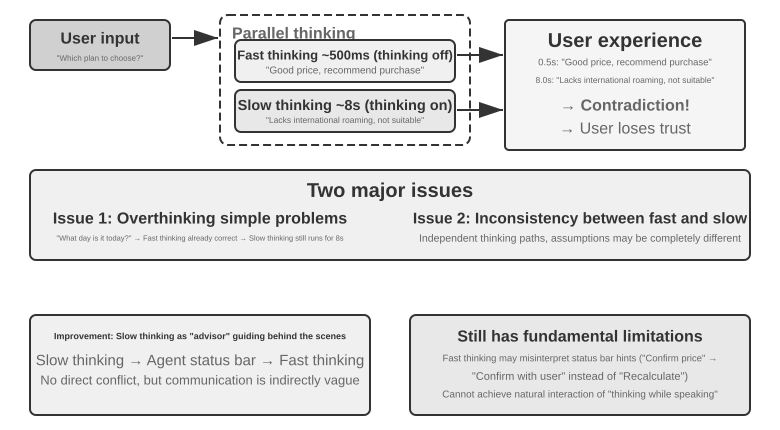
Sorun 1: Basit sorularda aşırı düşünme. Kullanıcı "bugün günlerden ne" diye sorar; hızlı düşünme 500ms içinde doğru yanıtı, "çarşamba"yı, verir; yavaş düşünme yine de tam 10 saniyelik düşünmeyi tamamlayıp "çarşamba"yı bir kez daha tekrarlar. Bu yalnızca hesaplama kaynağı israfı değildir; daha ciddisi, konuşmanın temposunu bozar — kullanıcı yanıtını almış, sonraki konuya geçmeye hazırlanıyorken tekrarlanan bir yanıtla sözü kesilir. Sorun 2: Hızlı ile yavaşın tutarsızlığı. İkisi bağımsız ve paralel çalışır; gördükleri context aynı olsa da düşünme yolları tümüyle farklılaşabilir — hızlı düşünme bir varsayıma dayanarak ilk yanıtı verir, yavaş düşünme ise o varsayımın geçersiz olduğunu fark edip tam tersi bir sonuca varır. Kullanıcı birkaç saniye içinde arka arkaya birbiriyle çelişen iki yanıt duyar ve güven bir anda yıkılır. Temel neden şudur: Çözüm 1, konuşmayı tutarlı tek bir bilişsel etkinlik olarak değil, birbirinden bağımsız iki düşünme süreci olarak parçalar; hızlı ile yavaş arasında bir koordinasyon mekanizması yoktur.
<user>Bu paket bana uygun mu?</user>
<!-- Hızlı düşünmeden 0,5 saniye sonra -->
<assistant (hızlı düşünme)>Bu paketin fiyatı çok avantajlı, satın almanızı öneririm.</assistant>
<user>Tamam, o zaman ben...</user>
<!-- Yavaş düşünme 8 saniye sonra tamamlanıyor -->
<assistant (yavaş düşünme)>Bir saniye, bu pakette ihtiyacınız olan uluslararası dolaşım özelliğinin bulunmadığını fark ettim, pek uygun olmayabilir.</assistant>
<user>(öfkeli) Sonuçta almamı mı öneriyorsun, almamamı mı?!</user>
Çözüm 2: Hızlı Düşünme Etkileşir, Yavaş Düşünme Uyarır¶
Çözüm 2'de yavaş düşünme, hızlı düşünmenin çıktısını görebilir ve kullanıcıya doğrudan konuşmak yerine Agent Durum Çubuğu (Bölüm 2'de tanıtılan dinamik meta bilgi enjeksiyonu mekanizması) üzerinden hızlı düşünmeye öneri iletir. Çözüm 1'e kıyasla iki iyileştirme getirir: yavaş düşünme arka planda asenkron çalışır ve konuşma aralarından yararlanarak düşünmeyi sürdürür; hızlı düşünmenin çıktısını görebildiği için onunla doğrudan çelişmez, perde arkasına çekilip "akıl hocası" rolünü üstlenir. Yukarıda anılan GPT-Live devretmesi ve Pine AI sesli Agent'ı, Çözüm 2'nin üretimdeki örnekleridir — arka plandaki reasoning modeli vardığı sonuçları özet bir metin kanalıyla ön plandaki etkileşim modeline geri gönderir, kullanıcıya ne zaman ve hangi sözcüklerle aktarılacağına ise ön plandaki model karar verir.
Ama bu çözümün de özsel sınırları var. Hızlı düşünme sözü dinlemeyebilir — birbirinden bağımsız iki düşünme örneği arasındaki iletişim dolaylı ve bulanıktır. Hızlı düşünme, Agent Durum Çubuğu'ndan geleni yanlış anlayabilir; örneğin "fiyatın yeniden teyit edilmesi gerekiyor" ifadesini "fiyat yanlış hesaplandı, yeniden hesaplanmalı" yerine "kullanıcıya bu fiyatı kabul edip etmediğini sor" diye yorumlayabilir. Ara düşünme sonuçlarına erişilemez — yavaş düşünme, 10 saniyelik düşünmesi sırasında değerli pek çok ara sonuç üretmiştir, ama hızlı düşünme bunların hiçbirini göremez; yalnızca nihai Agent Durum Çubuğu güncellemesini bekleyebilir. Kullanıcı, yavaş düşünme tamamlanmadan yeniden soru sorarsa ya da araya girerse, hızlı düşünme yalnızca kendi sınırlı anlayışıyla yanıt verebilir. Bu, bir problemi birlikte çözmeye çalışan iki kişinin yalnızca not kâğıdı uzatarak haberleşmesine, birbirinin müsvedde kâğıdını görememesine benzer.
Çözüm 2 ayrıca temel bir kuramsal sorunla da karşı karşıyadır: "düşünürken konuşma" gerçekleştirilemez. İnsan karmaşık bir problemle karşılaştığında yanıtın tamamını önce kafasında kurup sonra tek nefeste söylemez; bir parça düşünür, bir parça söyler — "bu soru çok ilginç... (düşünmek için durur) önce şunu göz önünde bulundurmamız gerekiyor... (düşünmeyi sürdürür) ikinci olarak...". Çözüm 2'deki hızlı düşünme ise yavaş düşünme sonuç verene kadar yalnızca doldurma sözcükler söyleyip boşuna bekleyebilir; düşünme sürecini konuşmanın içine doğal biçimde serpiştiremez.
Çözüm 3: Uçtan Uca Düşünme ve İfadenin Birleşmesi (Step-Audio R1 Örneği)¶
Çözüm 2, yavaş düşünmenin beklenmesi sorununu çözmüş olsa da mimari olarak hâlâ "önce düşün, sonra söyle" biçimindedir — düşünme ile ifade birbirinden ayrı iki süreç olarak kalır ve insan gibi düşünürken konuşmak mümkün olmaz. Bu temel sınırı aşmak için düşünme yeteneğini doğrudan modelin içine içselleştirmek gerekir.
Step-Audio R1 tam da bu yönde kökten farklı bir çözüm önerir: düşünme yeteneğini doğrudan uçtan uca ses-dil modelinin içine içselleştirir ve çift beyinli bir mimariyle gerçek anlamda "düşünürken konuşmayı" gerçekleştirir. Aslında birbirini tamamlayan iki mekanizmadan oluşur ve her biri farklı bir sorunu çözer: modaliteye demirlenmiş düşünme damıtması (MGRD) önce "doğru düşünülüyor mu" sorusunu çözer — modelin metin transkripsiyonuna değil, gerçekten akustik özelliklere dayanarak düşünmesini sağlar; MPS çift beyin mimarisi ise "zamanında konuşuluyor mu" sorusunu çözer — düşünme ile ifadeyi paralel hâle getirip düşük gecikmeli, düşünürken konuşmayı mümkün kılar. Birincisi ikincisinin ön koşuludur: ancak düşünmenin kendisi sese kök saldığında düşünürken konuşmanın gerçek bir değeri olur. Şimdi ikisini sırayla açalım.
Metin vekilli düşünme sorunu. İdeal durumda bir konuşma modeli, konuşanın duygusunu ya da niyetini anlamak için doğrudan ses özelliklerini (perde, ritim, tonlama gibi) çözümlemelidir. Ama pratikte pek çok model kestirme yola sapar: mevcut ses-dil modellerinde sezgiye aykırı bir olgu görülür — düşünme zinciri uzadıkça performans daha da kötüleşir. Step-Audio R1 ekibi bunun kök nedeninin "metin vekilli düşünme" (Textual Surrogate Reasoning; yani akustik bilginin yerine metin bilgisini koyarak çözümleme yapmak) olduğunu buldu: model "düşünürken" aslında metin transkripsiyonuna dayanarak anlam düzeyinde düşünür, gerçekten akustik özellikleri çözümlemez. Bir örnek: modelden bir şarkının duygusunu belirlemesi istendiğinde çözümlediği şey "sözlerde hüzünden söz ediliyor" olur; "minör tonda bir ezgi ile inen perde konturu hüzün duygusu taşıyor" değil. Bu modalite kayması eğitim verisinden kaynaklanır: ses modellerinin çoğunda CoT (Chain-of-Thought, düşünce zinciri) verisi metin modelleriyle üretilir ve doğal olarak saf metne dayalı düşünme kalıbını devralır.
Modaliteye demirlenmiş düşünme damıtması (MGRD, Modality-Grounded Reasoning Distillation) bu sorunu yinelemeli özdüzeltme yoluyla çözer (Şekil 9-6). Adı dilde dolansa da temel fikir oldukça sezgiseldir: "gerçekten sesi dinleyen" düşünme süreçlerini süzmek, modeli bunlarla eğitmek ve modelin bir metin editörü gibi yalnızca söz metnine bakmak yerine bir müzik öğretmeni gibi kulağıyla çözümlemeyi öğrenmesini sağlamak. Üç adımdan oluşur:
- Mevcut modele aynı ses parçası için birden çok farklı düşünme süreci ürettirin, sonra gerçekten akustik özelliklere dayananları süzün. Nasıl süzülür? Düşünme içeriğinde somut ses parametrelerinden söz edilip edilmediğine bakılır. Örneğin öfkeli bir konuşma girdisinde metne dayalı düşünme şöyledir: "kullanıcı 'çok berbat' gibi olumsuz sözcükler kullandı, dolayısıyla bunun öfke olduğuna hükmediyorum" — bu yalnızca metin içeriğini çözümlemektir; akustik özelliklere dayalı düşünme ise şöyledir: "konuşma hızı normalden %40 daha yüksek, ses düzeyi belirgin biçimde artmış, ton tizleşmiş" — asıl sesi "dinleyen" budur. MGRD ikincisini seçer
- Bu yüksek kaliteli düşünme verisiyle modeli yeniden eğitip "kulakla düşünme" yeteneğini güçlendirin
- Pekiştirmeli öğrenmeyle daha da iyileştirip modelin tembellik edip düşünmeyi atlayarak doğrudan yanıtı tahmin etmesini önleyin
Birkaç yinelemenin ardından düşünmenin temeli metin soyutlamasından akustik çözümlemeye doğru adım adım kayar — model, "konuşan mutsuz gibi görünüyor" biçiminde genel geçer bir ifade yerine "perde konturu 1,2 saniyede sert biçimde düşüyor" gibi ayrıntılara odaklanmaya başlar.
MPS çift beyin mimarisi (Mind-Paced Speaking; birebir çevirisiyle "düşüncenin temposuna uyarak konuşmak") düşünme ile konuşma çıktısı arasındaki gecikme çelişkisini çözer (Şekil 9-6). İlhamını insan beynindeki iş bölümünden alır: insan beyninde düşünmeden sorumlu bölge ile dili kurmaktan sorumlu bölge birbirinden ayrıdır ve paralel çalışabilir — siz bir sonraki cümleyi düşünürken ağzınız hâlâ bir önceki cümleyi söylemektedir. MPS bu iş bölümünü iki modelle taklit eder: Kurgulama Beyni (Formulation Brain) sürekli düşünmekten sorumludur ve düşünme sonuçlarını parça parça üretir; İfade Beyni (Articulation Brain) ise her yeni düşünme parçasını aldığında bunu önceki düşüncelerle ve o ana kadar üretilmiş yanıtla birleştirip sesli yanıta dönüştürür.
İkisi paralel çalışır — Kurgulama Beyni içeriğin tamamını düşünmeyi bitirmeden İfade Beyni çoktan konuşmaya başlamıştır. Örneğin Kurgulama Beyni t=0ms'de kullanıcının sorusunu çözümlemeye başlar ve t=200ms'de ilk düşünme parçasını (bir metin token dizisini) üretir; İfade Beyni bu parçayı t=200ms'de alır, o ana kadar üretilmiş yanıt bağlamıyla birleştirir ve t=350ms'de karşılık gelen ses token'larını üretmeye başlar — iki modül boru hattı biçiminde paralel çalışır ve kullanıcı daha t=350ms'de ilk heceyi duyabilir.
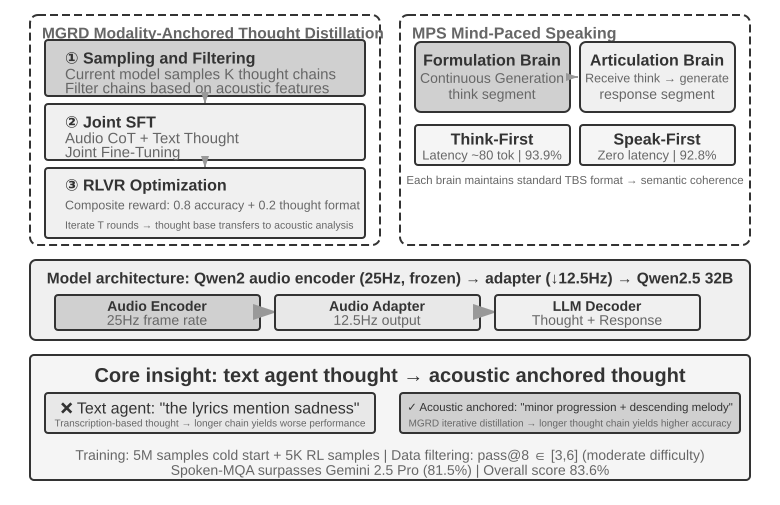
Deney 9-4 ★★★: Step-Audio R1 ile Uçtan Uca Sesli Düşünmeyi Gerçekleştirmek
Bu deney, Step-Audio R1 modelini kullanarak farklı yapılandırmaların sesli düşünme ve diyalog görevlerindeki başarımını karşılaştırır. Step-Audio R1; ses kodlayıcı, ses adaptörü ve Qwen2.5 32B kod çözücüden oluşur ve çok GPU'lu bir dağıtım gerektirir.
Deney iki görev üzerinde değerlendirme yapar: Spoken-MQA (sesli matematik soruları), modelin sözlü olarak dinlediği bir problemin ardından çok adımlı matematiksel reasoning yapıp yapamadığını sınar; URO-Bench (Çince sözlü diyalog benchmark'ı) açık uçlu diyalog kalitesini ölçer.
Test yapılandırmaları iki boyuta ayrılır. Birincisi düşünme zamanlamasıdır: eksiksiz TBS (Think-Before-Speak, önce düşünmeyi bitir sonra konuş; gecikme kısıtı olmayan kontrol taban çizgisi olarak kullanılır) düşünmenin tamamını üretip ondan sonra söze başlar. Gecikmeyi düşürmek için MPS iki "düşünürken konuşma" varyantı sunar — Speak-First (spkfirst olarak da anılır; sıfır gecikme, konuşmaya başlama ile düşünme aynı anda devreye girer) ve Think-First (thkfirst olarak da anılır; düşünme beyni ilk parçayı üretene kadar beklenir, gecikmesi yaklaşık 80 token). İkincisi mimaridir: MPS'nin çift beyinli paralel yapısı ile geleneksel tek modelli TBS.
Sonuçlar Tablo 9-1'de gösteriliyor; farklı düşünme zamanlaması ve mimari yapılandırmalarının matematik doğruluğu ile diyalog puanı üzerindeki başarımını karşılaştırmak için kullanılıyor.
Tablo 9-1 Step-Audio R1'in Farklı Sesli Düşünme Yapılandırmalarının Karşılaştırması
Yapılandırma Spoken-MQA URO-Bench Düşünmeden doğrudan yanıt (taban çizgisi) %70,6 77,4 MPS Speak-First (sıfır gecikme) %92,8 82,5 MPS Think-First (~80 tok gecikme) %93,9 84,8 Eksiksiz TBS (gecikme kısıtı yok) %93,0 — İlginç bir bulgu şudur: Speak-First'ün düşünme görevleri üzerindeki etkisi çok küçüktür (%92,8, eksiksiz TBS'nin %93,0 değerine yakın). Bunun nedeni, CoT'un (Chain-of-Thought, düşünce zinciri) başlangıcının genellikle yalnızca sorunun içeriğini tekrarlaması ve henüz gerçek reasoning'e girmemiş olmasıdır; dolayısıyla model söze başlar başlamaz düşünmeyi de aynı anda devreye alsa bile nihai doğruluk neredeyse hiç zarar görmez. Dikkate değer bir başka ayrıntı da şudur: Think-First (%93,9), gecikme kısıtı olmayan eksiksiz TBS'den (%93,0) hafifçe daha yüksektir — olası bir açıklama, düşünmenin parça parça üretilip parça parça ifadeye dönüştürülmesinin adım adım denetime benzer olumlu bir etki yaratmasıdır; elbette aradaki fark değerlendirme hata payının içinde kaldığından fazla yorumlanmamalıdır.
Çözüm 3 düşünmeyi tek bir modelin içine "içselleştirerek" "düşünürken konuşmayı" en zarif biçimde gerçekleştirir; ama bedeli tam da bu kısmın başında söylenen "hareketli hedeftir": bu tek model hem en güçlü reasoning yapan olmak hem de gerçek zamanlı konuşan olmak zorundadır ve iki yetenek de hızla evrildiğinden, birleşik hat ayak uydurabilmek için defalarca yeniden eğitilmek durumundadır. Bu, bu satırların yazıldığı dönemdeki sektörel ayrışmayı da açıklıyor — "istenildiği an en yeni beyne geçebilme" peşindeki öncü ürünler (GPT-Live, Grok Voice, Pine AI) çoğunlukla Çözüm 2'nin ayrıştırma hattına oynuyor; Çözüm 3 ise azami doğallığı hedefleyen ve özel eğitim maliyetini üstlenmeye razı olan senaryolara daha uygun. İkisi birbirinin yerini almaz; bu, "değiştirilebilir beyin" ile "daha sıkı bir düşünürken konuşma" arasındaki bir ödünleşimdir.
Hızlı ile Yavaş Arasındaki Arayüz: Metin Dışında Başka Ne Aktarılabilir¶
(Not: Bu, senaryolar arası bir arayüz tartışmasıdır ve ses ana hattından geçici olarak ayrılır.) İkinci çözüme dönüp bakınca gözden kaçmış bir tasarım boyutu ortaya çıkar: yavaş düşünme, hızlı düşünmeye "söz aktarırken" metin kanalını kullanıyordu (durum çubuğu üzerinden tek cümlelik bir öneri). Metin anlaşılır ve hata ayıklaması kolaydır, ama yavaş düşünmenin kafasındaki birikime takılmış incecik bir pipetten ibarettir — asıl zengin olan ara durum, birkaç cümleye sıkıştırılır. Peki hızlı ile yavaş arasındaki bu arayüz metin kullanmak zorunda mıdır?
Tempo konusunda en katı senaryolardan biri olan gerçek zamanlı oyunlarda bu yol yürünebilir (buna gizli uzay köprüsü, Latent Bridge denebilir)5: hızlı tepkiden sorumlu küçük bir model (saniyede on küsur eylem üreten) ile akıl yürütmeden sorumlu yavaş bir model (saniyede bir düşünce üreten) tamamen dondurulur, yalnızca aralarındaki birkaç on milyon parametrelik küçük bir "köprü" eğitilir. Bu köprü, yavaş modelin gizli katman sonuçlarını doğrudan birkaç "latent token"a yansıtır ve çok modlu modellerin görsel token'ları araya yerleştirmesi gibi bunları hızlı modelin girdisine ekler — böylece "düşünce → metin → yeniden anlama" gidiş dönüşü baypas edilir. Sonuçta birçok Atari oyununda bu gizli uzay kanalı geleneksel metin kanalını belirgin biçimde geride bıraktı (bazı oyunlarda +%26 ila +%82), üstelik adım başına yalnızca yaklaşık 5 milisaniye ekleyerek — yani gerçek zamanlı tempoya yetişmeye devam ederek.
Aynı çalışma dürüst bir sınır da çiziyor: hızlı-yavaş iş birliğinin işe yarayıp yaramaması, görevin darboğazının "aklına gelip gelmemesinde" mi yoksa "zamanında tepki verilip verilememesinde" mi olduğuna bağlıdır — köprü ancak yavaş düşünme zaten hızlı tepkiden güçlüyken yardımcı olur (bu korelasyon oyunlar genelinde r≈0,9'a kadar çıkıyor); tersine, görev tamamen tepki hızına dayanıyorsa en iyi köprü bile bir işe yaramaz. Bu yargı sadece oyunlar için geçerli değil; bu bölümün ilerleyen kısmında Computer Use'un karşılaşacağı aynı soruyu da haber veriyor: ne zaman bir "yavaş akıl hocası" çağırmaya değer, ne zaman bu yalnızca gecikme eklemekten ibaret kalır?
Uçtan uca da olsa modüler de olsa, algı katmanının ve yürütme katmanının kendi kaliteleri hâlâ kritik önemdedir. Uçtan uca modeller gecikmeyi mimari düzeyde çözer, ama "doğru duymak" ve "insan gibi konuşmak" biçimindeki bu iki temel beceri mimari değişti diye kendiliğinden çözülmez — "doğru duymak"a karşılık gelen akış tabanlı konuşma algısı birinci paradigmada ele alındı; burada "insan gibi konuşmak"ın yürütme katmanına bakıyoruz: daha insansı konuşma sentezi.
Daha İnsansı Konuşma Sentezi¶
Geleneksel TTS'in "kusursuzluğu" tam da sorunun kendisidir: aşırı akıcı, hiç duraksamayan, dolgu sözcüğü içermeyen konuşma, duyulur duyulmaz makine olduğunu ele verir. İnsan konuşmasındaki o "kusurlar" birer eksiklik değildir — duraksamalar, dolgu sözcükleri ("eee", "ııı", "şey"), ara sıra yapılan tekrarlar — aslında düşünme sürecinin doğal dışavurumudur ve dinleyiciye "şu an düşünüyorum", "pek emin değilim" gibi önemli sinyaller iletir. Oysa yapay zekanın düşünme hızı konuşmanın seslendirilme hızından çok daha yüksektir; çıktısı doğası gereği akıcı ve eksiksiz gelir, doğrudan sentezlendiğinde makine kimliğini açık eder.
Çözüm: "Nerede duraksanacağı, hangi tonun kullanılacağı" kararını ana LLM'e devretmek. LLM yalnızca metin değil, kontrol etiketleri de üretir: [THINKING] 1-2 saniyelik bir düşünme duraksaması ve dolgu sesi ("eee...") ekler; [SEARCHING] daha kısa bir duraksama ve arayış bildiren dolgu sözcükleri üretir ("şey...", "nasıl desem"); [EMO:happy] gibi etiketler tonu ve prozodiyi ayarlar; [SPEED:0.8x] konuşma hızını denetler. Şu anda karmaşık bir soruyu yanıtlarken duraksamak mı gerektiğini, kullanıcının sabırsızlandığını ve hızlanmak gerektiğini ya da bunun rahat bir sohbet olduğunu ve daha canlı konuşulması gerektiğini yalnızca LLM bilebilir.
Bu çözümde TTS, çok modlu bir üretici rolü üstlenir: girdi olarak metin + kontrol etiketleri alır, çıktı olarak ses verir. Sıradan metinle karşılaştığında normal biçimde konuşma sentezler; bir kontrol etiketiyle karşılaştığında ona karşılık gelen dilsel olmayan sesi üretir: [THINKING] uzatılmış bir "eee..." sesi, [SIGH] iç çekme sesi, [LAUGH:small] hafif bir kahkaha, [BREATH] nefes alma sesi üretir.
Uygulama için iki yol vardır: birincisi, kontrol etiketlerini yerleşik olarak destekleyen kendi TTS'ini geliştirmek (esnekliği en yüksek seçenek, ama uzman bir ekip gerektirir); ikincisi, voice cloning (ses klonlama) kullanmak — aynı sanal kişi için farklı duygu, hız ve stilde onlarca referans ses kaydı hazırlamak ve kontrol etiketlerine göre en uygun referans sesi seçerek TTS API'sini (ElevenLabs, Fish Audio gibi) çağırmak; bu yol birkaç hafta içinde devreye alınabilir.
Deney 9-5 ★★: Fish Audio Tabanlı, Kontrol Etiketleriyle Sürülen TTS
Fish Audio S1'in ses klonlama yeteneğini kullanın (aynı tınıyı zero-shot klonlamak için yalnızca 3-10 saniyelik referans ses yeterlidir). Duygu (nötr/mutlu/hayal kırıklığına uğramış/düşünceli) x hız (normal/hızlı/yavaş) x stil (resmi/rahat) kombinasyonlarını kapsayan, her biri yaklaşık 5 saniyelik 24 kayıtlık bir referans ses kütüphanesi oluşturun.
LLM çıktısı örneği:
[EMO:happy][SPEED:fast]Harika! Siparişiniz onaylandı.[THINKING]Eee, kargo süresine bir bakayım...[EMO:neutral][SPEED:normal]Yarın öğleden sonra teslim edilmesi bekleniyor.Yürütme katmanı etiketleri ayrıştırır ve karşılık gelen referans sese eşler:
[EMO:happy][SPEED:fast]"mutlu + hızlı + rahat" referans sesine,[THINKING]"düşünceli + yavaş + resmi" referans sesine (duraksama ritmi ve tereddütlü tonlamayla),[EMO:neutral][SPEED:normal]ise "nötr + normal + resmi" referans sesine karşılık gelir. Fish Audio farklı referans sesler arasında tınının tutarlı kalmasını garanti eder; yalnızca prozodi ve duygu değişir.Üç yapılandırmayı karşılaştırın: kontrol etiketi olmadan (akıcı ama mekanik, duyar duymaz yapay zeka olduğu anlaşılıyor), tek referans sesle (doğal ama duygusal olarak tekdüze) ve çok referanslı kütüphaneyle (bilgi teyit ederken neşeli ve hızlı, açıklamalardan önce doğal duraksamalar, genel olarak gerçek bir müşteri temsilcisinin anlatımına yakın).
Computer Use: GUI Otomasyonu Agent'ları¶
Buraya kadar okuyunca, bu bölümün sese ayırdığı yerin sonraki iki senaryodan belirgin biçimde fazla olduğu fark edilebilir — bu bilinçli bir tercihtir. Gerçek zamanlı çok modluluk çizgisinde ses, en uzun yolu almış ve referans çerçevesi olarak alınmaya en değer alandır: "seri boru hattının gecikmesi çok yüksek" sorunundan yola çıkıp uçtan uca modeller, full-duplex etkileşim ve düşünürken konuşma gibi bir dizi çözümden geçerek bugünkü görece olgunlaşmış noktaya ulaşmıştır; sorun → çözüm → son durum güzergâhının tamamı katedilmiştir. Bu yüzden onu enine boyuna anlattık. Sıradaki Computer Use ve robotik senaryolarını okurken bu güzergâhla karşılaştırın: her biri bu evrim çizgisinin neresine gelmiştir ve nerede takılı kalmıştır?
Bu üç senaryo görünüşte birbirinden çok farklıdır, ama aynı temel zorluklarla yüzleşir: gerçek zamanlı algı, düşük gecikmeli karar verme ve sürekli etkileşim. Şimdi bu teknik temaların görsel etkileşimde (Computer Use) ve fiziksel etkileşimde (robotik) nasıl yeniden ortaya çıktığına bakalım — önce bakış açısını işitsel modaliteden görsel modaliteye genişletelim: ya bir Agent yalnızca konuşmayı anlamakla kalmayıp ekranı da "görebilseydi" ve grafik arayüzü kullanabilseydi?
Computer Use (GUI otomasyonu Agent'ı olarak da anılır), yapay zekanın tıpkı bir insan gibi ekranı gözleyerek ve fare ile klavyeyi kullanarak yazılım çalıştırmasını sağlar — örneğin bilgi aramak için tarayıcı açmak, bir tablo yazılımına veri girmek veya sistem ayarlarında bir yapılandırmayı değiştirmek. Özünde bir algılama-düşünme-eylem döngüsü vardır (Şekil 9-7):
- Agent o anki ekranın görüntüsünü alır
- Çok modlu model ekran görüntüsünü ve görev talimatını alır, bir düşünme parçası ve somut bir eylem üretir
- Yürütme katmanı bu eylemi gerçek ortamda uygular (fareyi hareket ettirmek, tıklamak, metin girmek vb.)
- Arayüzün yanıt vermesini bekledikten sonra yeniden ekran görüntüsü alır ve döngünün bir sonraki turuna girer
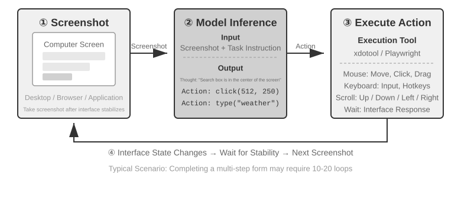
Bu döngüde üç kritik tasarım boyutu vardır: action space (eylem alanı — Agent'ın hangi işlemleri yürütebildiği), görsel konumlandırma (ekran görüntüsünde hedef öğenin nasıl bulunacağı) ve model mimarisi (ekran görüntüsünden doğru eylemin nasıl üretileceği).
Action Space Tasarımı¶
Anthropic, eksiksiz bir etkileşim yeteneği oluşturan üç tür araç tanımlar (Şekil 9-8):
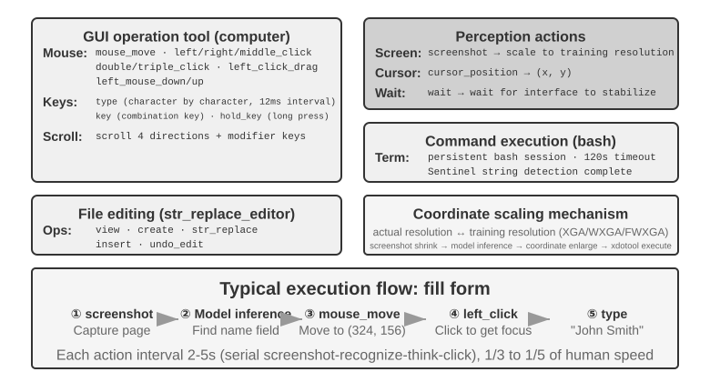
GUI işlem aracı (computer tool): Fare işlemleri arasında hareket ettirme (mouse_move), sol/sağ/orta tuş tıklaması, çift/üçlü tıklama, sürükleme (left_click_drag) ve daha ince taneli basma/bırakma (left_mouse_down/up) yer alır. Kaydırma (scroll) dört yönü destekler ve değiştirici tuşlarla birlikte kullanılabilir. Klavye işlemleri arasında karakter karakter yazma (type; gerçek klavye kullanımını taklit etmek için her karakter arasında 12 ms aralıkla), tuş kombinasyonları (key, örneğin Ctrl+C) ve tuşu basılı tutma (hold_key) bulunur. Algı eylemleri: ekran görüntüsü alma (screenshot), imleç konumunu okuma (cursor_position) ve bekleme (wait).
Komut yürütme aracı (bash tool): Kalıcı bir bash terminal oturumu sağlar, 120 saniyelik zaman aşımına sahiptir, komutun tamamlanıp tamamlanmadığını bir nöbetçi (sentinel) dizesiyle tespit eder ve çağrılar arasında ortam durumunu korur (örneğin cd ile bir dizine geçildikten sonra bir sonraki çağrı da aynı dizinde başlar).
Dosya düzenleme aracı (str_replace_editor): Dizi eşleştirmesi yoluyla güvenli düzenleme sağlar; görüntüleme, oluşturma, değiştirme, ekleme ve geri alma işlemlerini destekler. Dosyanın tamamının üzerine yazmaktan daha kesindir ve alakasız içeriği yanlışlıkla değiştirme olasılığı daha düşüktür.
Deney 9-6 ★: Anthropic Computer Use Demo'sunu Çalıştırmak
Konteyner, eksiksiz bir Ubuntu masaüstü ortamını (tarayıcı, terminal gibi yaygın araçlarla birlikte) paketler. Ön uç görev talimatlarını alır, arka uç talimatları ekran görüntüleriyle birlikte Claude'a gönderir, model işlem talimatlarını döndürür (fareyi hareket ettirme, tıklama, metin girme vb.) ve yürütme katmanı bunları sanal masaüstünde uygular.
Kilit gözlem: Her eylem arasında 2-5 saniye geçer (insandan belirgin biçimde yavaştır), ama yaygın görevlerde iyi bir planlama yeteneği gösterir ve görevleri makul işlem dizilerine kendi başına ayrıştırabilir.
Görsel Konumlandırma (Grounding)¶
Döngünün her turunda modelin ekran görüntüsü içinde hedef öğeyi doğru biçimde bulması gerekir — "Arama kutusu nerede?", "Gönder düğmesinin koordinatları ne?" İşte bu, görsel konumlandırma (Grounding) problemidir. Hâlihazırda başlıca iki yaklaşım vardır: birincisi konumlandırmayı bir çoktan seçmeli soruya dönüştürmek — önce arayüz öğelerini numaralandırarak işaretlemek, böylece modelin yalnızca birini seçmesi yeterli olur; ikincisi saf koordinat tahmini — modelin tıpkı bir insan gibi ekran görüntüsüne doğrudan "bakıp" koordinatı söylemesi. Çoktan seçmeli yaklaşımın da iki uygulama biçimi vardır: saf görsel işaretleme (orijinal Set-of-Mark; bir segmentasyon modeliyle piksel düzeyinde aday bölgeler çıkarılır) ve yapısal öğe indeksleme (DOM/Accessibility Tree; arayüzün kendi yapısı doğrudan okunur). Çoktan seçmeli yaklaşımın ortak avantajı, "ekran görüntüsünde düğmeyi bul ve koordinatını tahmin et" biçimindeki açık uçlu problemi "önceden işaretlenmiş öğelerden birini seç" biçimindeki kapalı uçlu bir probleme çevirmesidir — tıpkı sınavda çoktan seçmeli soruların boşluk doldurmaya göre daha kolay doğru yanıtlanması gibi, modelin "ekranın sol üst köşesinden yaklaşık 200 piksel sağdaki mavi düğmeye tıkla" demesi gerekmez, "[123]'e tıkla" demesi yeter.
Set-of-Mark: görsel işaretleme yöntemi.
Orijinal Set-of-Mark (SoM), 2023'te Microsoft Research tarafından, başlangıçta GPT-4V'nin görsel konumlandırma yeteneğini açığa çıkarmak amacıyla önerildi. Saf görsel bir yöntemdir: görüntü segmentasyon modelleri (SAM, SEEM vb.) ekran görüntüsünde aday bölgeleri otomatik olarak çıkarır, her bölgenin üzerine numaralı bir işaret bindirilir; modelin gördüğü şey numaralandırılmış bir görüntüdür ve yalnızca numarayı söylemesi yeterlidir, sistem bunu ilgili bölgenin merkez koordinatına çevirir. Sürecin tamamı DOM'a ya da herhangi bir arayüz iç yapısına ihtiyaç duymaz; bu nedenle yerel masaüstü yazılımları ve oyun arayüzleri için de aynı ölçüde geçerlidir — yeter ki segmentasyon modeli aday bölgeleri çıkarabilsin.
Yapısal öğe indeksleme: SoM fikrinin Web üzerindeki yapısal uygulaması.
Arayüzün kendisi yapısal bilgi sunabildiğinde işaretleme çok daha kesin yapılabilir. Modern web sayfaları, render edilmeden önce zaten eksiksiz bir öğe yapısı (DOM ağacı) ve semantik roller (hangisi düğme, hangisi giriş kutusu) tanımlar; erişilebilirlik arayüzü (Accessibility Tree) birçok masaüstü uygulaması için benzer bilgiyi sağlar. Bir segmentasyon modelinin piksellerden "hangi bölge düğme" diye tahmin yürütmesindense, doğrudan arayüzün kendisine "tıklanabilir hangi öğelerin var?" diye sormak daha iyidir. browser-use projesinin temsil ettiği Web Agent çözümleri tam olarak bunu yapar: etkileşimli öğeleri DOM'dan numaralandırarak listeler; bu, SoM fikrinin Web üzerindeki yapısal uygulaması sayılabilir (Şekil 9-9). Süreç dört adımdan oluşur:
- Tarayıcının hata ayıklama arayüzü (CDP, Chrome DevTools Protocol) üzerinden sayfanın yapısal temsilini (DOM ağacı) ve erişilebilirlik bilgilerini elde etmek
- Hangi öğelerin etkileşimli olduğunu otomatik olarak tespit etmek (düğmeler, giriş kutuları, bağlantılar vb.)
- Her etkileşimli öğeye benzersiz bir ID atamak ve ekran görüntüsünde sınırlayıcı kutuları çizmek
- Aynı anda, her ID'ye karşılık gelen öğeyi tanımlayan bir metin listesi üretmek
Screenshot: [Görseldeki kilit öğeler [1], [2], [3], [4] gibi ID'lerle işaretlenmiştir]
Elements:
[1] <input type="text" placeholder="Search" aria-label="Search" />
[2] <button id="submit-btn" aria-label="Submit form" />
[3] <input type="text" placeholder="Enter your name" value="" />
[4] <a href="/docs" aria-label="Documentation" />
Modelin yalnızca bir ID numarası üretmesi yeterlidir; sistem otomatik olarak o öğenin merkez koordinatını kullanarak tıklamayı gerçekleştirir. Bu tür çözümler token tasarrufu sağlamaz (çünkü tüm işaretleme bilgisinin modele gönderilmesi gerekir), ama konumlandırması kesin ve kararlıdır; üstelik segmentasyon modelinin yol açabileceği atlanmış ve yanlış tespitleri de ortadan kaldırır.
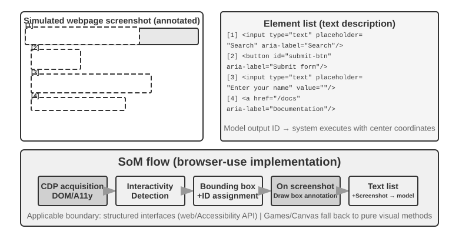
Saf koordinat tahmini.
Üçüncü yol hiçbir işaretleme yapmaz, doğrudan modelin koordinat üretmesini ister. SeeClick ve Claude'un computer use'u bunun temsilcileridir: devasa miktarda GUI ekran görüntüsü ve öğe konumu eşleşmesinden oluşan veriyle görsel modeller eğitilir ve modelin doğal dil betimlemelerini (örneğin "gönder düğmesine tıkla") doğrudan ekran görüntüsündeki kesin koordinatlara eşlemeyi öğrenmesi sağlanır — tıpkı bir insan kullanıcı gibi, tıklanacak yeri saf görme yoluyla bulur.
Koordinat tahmini çözümlerinde modelin koordinatları kavrayışı, eğitim sırasında kullanılan çözünürlüğe yüksek oranda bağımlıdır (Şekil 9-10). Claude'un eğitiminde XGA (1024x768), WXGA (1280x800) ve FWXGA (1366x768) kullanılmıştır; girdi olarak verilen ekran görüntüsünün çözünürlüğü bunlarla uyuşmazsa modelin tahmin ettiği koordinatlar sistematik biçimde kayar — tıpkı küçük bir haritada ölçülen mesafeyi doğrudan büyük haritaya uygulamak gibi. Bu nedenle araç katmanında çift yönlü bir koordinat ölçekleme mekanizması gerekir ve hedef çözünürlük en-boy oranına göre seçilmelidir; aksi hâlde orantısız gerdirme görüntüyü bozar ve koordinat değerlendirmesini de saptırır. Örneğin gerçek ekran çözünürlüğü 2560×1440 (16:9) ise, Claude'un desteklediği üç seçenek arasından en-boy oranı 16:9'a en yakın olanı — FWXGA (1366×768) — seçilmelidir. Ekran görüntüsü orantılı biçimde 1366×768'e ölçeklenip modele verilir; model tıklama koordinatı olarak (683, 384) ürettiğinde bu değer ters yönde gerçek koordinata eşlenir: (683×2560/1366, 384×1440/768) ≈ (1280, 720). Buna karşılık 16:9'luk bir görüntü zorla 4:3'lük 1024×768'e gerdirilirse görüntü yatayda ezilir ve modelin tahmin ettiği koordinatlar sistematik olarak kayar.
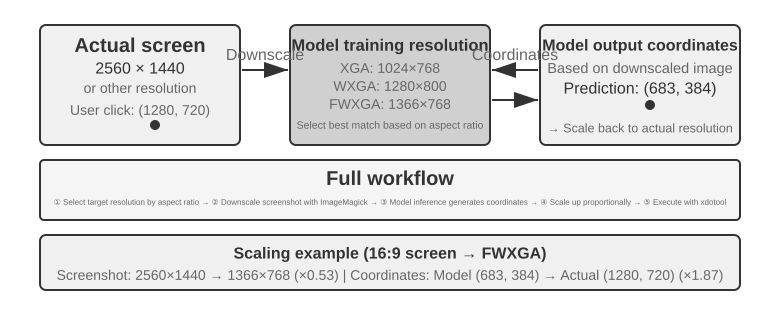
Üç yol arasındaki seçim mantığı şöyle özetlenebilir: yapısal bilgi elde edilebiliyorsa öncelikle DOM/Accessibility Tree indekslemesi kullanılmalıdır; konumlandırması en kesin ve en kararlı olan budur. Elde edilemiyorsa (Photoshop gibi yerel masaüstü yazılımları, Canvas/WebGL ile render edilen arayüzler, oyunlar) hem görsel işaretleme (orijinal SoM yolu) hem de koordinat tahmini kullanılabilir. Görsel işaretleme konumlandırmayı çoktan seçmeli bir soruya dönüştürdüğü için, özel olarak eğitilmemiş genel amaçlı modellere daha dosttur; koordinat tahmini ise işaretleme adımını ortadan kaldırdığı için, GUI konumlandırma eğitimi almış modeller açısından daha doğrudandır. Küçük öğelerde ve yoğun arayüzlerde her ikisinin de doğruluğu hâlâ yetersizdir.
Deney 9-7 ★: browser-use ile Otomatik Tarayıcı İşlemleri
Playwright tarayıcı otomasyon çerçevesini (tarayıcıyı kodla denetlemeye yarayan bir kütüphane) çok modlu büyük modellerle birleştirerek doğal dille sürülen tarayıcı işlemlerini gerçekleştirin. SoM görselleştirme modunu etkinleştirin ve her karardan önce işaretleme kutularının bulunduğu ekran görüntüsünü kaydedin.
"Google'ı aç ve San Francisco hava durumunu sorgula" test görevi: Sistem başlatıldıktan sonra alınan ekran görüntüsü Google arama sayfasını gösterir ve tüm etkileşimli öğeler kırmızı sınırlayıcı kutular ile ID numaralarıyla işaretlenmiştir (adres çubuğu
[1], arama kutusu[2], arama düğmesi[3], "Kendimi Şanslı Hissediyorum" düğmesi[4]vb.) → model analiz ettikten sonra[2]ye (arama kutusu) tıklar → arama kutusu odağı aldıktan sonra "San Francisco weather today" yazılır →[3]e (arama düğmesi) tıklanır → sayfa arama sonuçlarına geçer, yeni ekran görüntüsünde hava durumu kartının içindeki öğeler işaretlenir ve model sıcaklık, hava koşulu gibi bilgileri tanıyıp çıkarır. Tüm süreç 5 adım sürer ve yaklaşık 20 saniyede tamamlanır.
Animasyon Görebilen, Ses Duyabilen Computer Use Agent'ı¶
Buraya kadar Computer Use'un algısı örtük bir varsayıma dayanıyordu: ekran durağandır — bir görüntü al, bir adım düşün, bir kez tıkla, sonra bir görüntü daha al. Oysa gerçek ekranlarda video oynar, göz açıp kapayıncaya kadar kaybolan bildirimler belirir, toplantılardaki insan sesleri duyulur. Her 3–5 saniyede bir gözünü açan ve hiç kulağı olmayan bir Agent, "iki kare arasında olup bitenleri" ne görebilir ne de duyabilir. Ekran kaydı izlemek, bir toplantıyı takip etmek, sesli bir uyarıyı dinlemek, bir anda gelip geçen bir iletişim kutusuna yetişmek — bu gündelik bilgisayar işlerinin tamamı bugünün Computer Use Agent'ı için neredeyse yasak bölgedir.
Burada asıl yeniden tasarlanması gereken şey "eylem arayüzü" değil, "gözlem arayüzü"dür6. Temel fikir, gözlemi (sürekli, uyarlanabilir, çok modlu) eylemden (ayrık) ayrıştırmak ve ortam ile herhangi bir hazır Computer Use modeli arasına yerleşen, yeniden eğitim gerektirmeyen bir algı ara katmanı hâline getirmektir (buna Agent–bilgisayar gözlem arayüzü, AOI denebilir). Bu katmanın "ihtiyaç oldukça kapağı açılan" üç bileşeni vardır. Birincisi, kareler arası anahtar kare yakalama: önce son derece ucuz bir piksel kapısıyla neredeyse hiç değişmeyen kareler atlanır, ardından küçük bir model görüntüde anlamlı bir değişiklik olup olmadığına karar verir ve yalnızca değişiklik varken bir kare yakalanır; durağan görüntüde maliyet neredeyse sıfırdır. İkincisi, ses seviyesiyle kapılanan konuşma transkripsiyonu: yalnızca ses varken konuşma tanıma çağrılır ve Agent ilk kez "kulak sahibi olur". Üçüncüsü — ve en kritiği — görüntüyü kalıcı metne dönüştürmek: model, yakalanan kareyi tek bir cümleyle betimler ("Az önce çıkan bildirimde yayın tarihinin 28 Nisan'a alındığı yazıyor") ve orijinal görsel daha sonra context'ten temizlense bile bu cümle bellekte kalır, yani dinamik bilgi metin biçiminde ileriye taşınır.
Sezgiye aykırı bir bulgu şudur: asıl işe yarayan şey "hangi karelerin seçildiği" değil, "karelerin uzun süre saklanabilecek metne dönüştürülmesi"dir — çünkü metin, LLM Agent'larının en iyi işlediği modalitedir. 7B'den öncü ölçeğe uzanan sekiz model üzerinde bu ara katman, hiçbir yeniden eğitim gerektirmeden +17 ila +48 yüzde puanlık iyileşme sağladı; aradaki en büyük fark sesli görevlerde görüldü: bu algı katmanı eklendiğinde Agent, daha önce "duyulabilir ama üzerinde işlem yapılamaz" olan sesli görevleri tamamlayabildi. Ne var ki bu, her duruma uyan sabit bir yapılandırma değildir — bazı daha yeni modellerde çok fazla görsel token yüklemek akıl yürütmeyi sıkıştırıp performansı düşürebiliyor. Dolayısıyla bu bileşenler toptan açılmak yerine model model seçilmelidir. Bu, daha önceki Set-of-Mark ile koordinat tahmini arasındaki tercihle aynı derstir: algı çözümlerinin gümüş kurşunu yoktur, yapılandırma modelin huyuna göre ayarlanır.
Mobil Taraf: Ekosistem Bariyerleri Teknolojiden Daha Zorlu¶
Computer Use mobil tarafa da yayılıyor. Mobil ile masaüstü arasında teknik açıdan gerçek farklar vardır: action space genellikle artık "fare koordinatı + klavye" değildir, sistemin erişilebilirlik servisi API'si (örneğin Android'in AccessibilityService'i) üzerinden arayüz öğeleri okunur, tıklama ve metin girişi gönderilir; etkileşim biçimi de fare imlecinden dokunma hareketlerine döner ve koordinatın anlamı buna bağlı olarak değişir — aynı (x, y) noktasının parmakla tek dokunuş mu, uzun basma mı, yoksa bir kaydırma hareketinin başlangıç noktası mı olduğunu belirlemek için ayrıca bir hareket türü gerekir. Bölüm 6'da tanıtılan AndroidWorld gibi mobil benchmark'lar, Agent'ın gerçek uygulamalarda görev tamamlama yeteneğini tam da böyle bir action space üzerinde değerlendirir.
Ama mobil tarafı asıl tıkayan şey çoğu zaman bu teknik farklar değil, ekosistem bariyerleridir. Bazı telefon üreticileri, tüketici sınıfı telefonlara yapay zeka asistanları entegre edip WeChat, Taobao, Alipay gibi gündelik uygulamaları otomatik olarak kullandırmayı denedi, ama kısa sürede platform kısıtlamalarına takıldı.
Bu durum Computer Use'un karşılaştığı kendine özgü bir zorluğu açığa çıkarır: ekosistem bariyerleri. Engellemenin temelindeki neden bir iş modeli çatışmasıdır. Geleneksel internet uygulamalarının çekirdek gelir mantığı trafik ve dikkattir: kullanıcı akışı kaydırırken reklam görür, ürün ararken öneri algoritmasının yönlendirmesine uyar, sayfaları gezerken anlık satın alma kararı verir. Agent kullanıcının yerine işlem yaptığında ise bu gelir zinciri tamamen baypas edilir: yapay zeka reklamlara bakmaz, anlık alışveriş yapmaz, doğrudan hedefe gidip görevi bitirir ve çıkar. Reklam ve trafikten para kazanan platformlar için Agent'ın her işlemi, iş modelinin temelini aşındırır.
Bu da Computer Use'un yalnızca CAPTCHA (doğrulama kodu) gibi teknik düzeydeki karşı önlemlerle değil, yapısal bir çıkar çatışmasıyla da karşı karşıya olduğu anlamına gelir. Bu çelişkiyi kısa vadede uzlaştırmak zordur ve Computer Use'un tüketici senaryolarında hayata geçmesini, salt teknik sorunlardan daha çetin bir engelle karşı karşıya bırakır.
Gerçek Zamanlılık: Henüz Çözülmemiş Temel Zorluk¶
OSWorld (değerlendirme metodolojisi Bölüm 6'da ayrıntılı olarak anlatılıyor), yaygın kullanılan bir Computer Use değerlendirme benchmark'ıdır ve Agent'ın gerçek Ubuntu/Windows/macOS ortamlarında uygulamalar arası görevleri tamamlama yeteneğini ölçer. Erken dönem genel amaçlı modellerin bu benchmark'taki başarı oranı yalnızca %20 civarındaydı; sonraki özel modeller ve daha güçlü genel amaçlı modeller doğruluğu sürekli yukarı taşıdı ve bu satırların yazıldığı sırada kademeli olarak insan seviyesine yaklaştı. Ama doğruluk hiç de bitiş çizgisi değil — asıl darboğaz "doğru yapabiliyor mu" sorusundan "hızlı yapabiliyor mu" sorusuna kaydı.
OSWorld-Human verimlilik araştırması can sıkıcı bir gerçeği ortaya koyuyor: görev sonunda başarıyla tamamlansa bile, Agent'ın aynı görev için ihtiyaç duyduğu işlem adımı sayısı insandan belirgin biçimde fazla kalıyor; üstelik her adımın çıkarım gecikmesi görev ilerledikçe sürekli büyüyor — context uzadıkça model daha yavaş karar veriyor ve geç adımlar çoğu zaman erken adımlardan çok daha uzun sürüyor. Bir insanın onlarca saniyede bitirdiği bir doküman biçimlendirme işi, Agent'ın dakikalarını alabiliyor. İnsan seviyesinde doğruluğa ulaşmak kullanışlılıkla aynı şey değildir; asıl darboğaz verimliliktir.
Verimlilik sorununun kökeni ses senaryosundakine benzer: seri işleyen "ekran görüntüsü-düşünme-tıklama" döngüsünde her halka en uç noktasına kadar optimize edilse bile, adım adım biriken gecikme yine de kabul edilemez düzeyde kalır. Daha derindeki sorun şudur: bugünkü Computer Use "önceden düşünmeyi" hiç beceremiyor. Agent, mevcut eylemi yürütürken bir sonraki adımda ne yapacağını da öngörebilseydi — örneğin sayfa yüklenirken bir sonraki tıklamanın nereye yapılacağını çoktan kararlaştırabilseydi — düşünme ile yürütme zamanları üst üste bindirilebilir ve toplam gecikme büyük ölçüde düşürülebilirdi (bu, bu bölümün başındaki ses senaryosunda "düşünürken konuşma" ile Bölüm 4'teki "sürekli düşünme" tarzı asenkron Agent'ın talebinin aynısıdır; burada yalnızca "düşünürken işlem yapma"ya dönüşmüştür).
Ses alanından farklı olarak, Computer Use'un kendi gerçek zamanlılığı için — yani "ekran görüntüsü-düşünme-tıklama" döngüsünün kendisini hızlandırmak için — şu an sistematik bir çözüm yok; hâlâ kare kare ekran görüntüsüne dayalı ayrık bir döngüde takılı durumda. Ama bunu baypas eden bir fikir çoktan işler hâle geldi ve bu bölümde tekrar tekrar karşımıza çıkan hızlı-yavaş ayrıştırmasını kullanıyor: madem yavaş çalışan bilgisayar kullanma Agent'ını hızlandırmak zor, o hâlde kullanıcıyı onu boş yere bekletmeyelim. "Konuşma" ile "bilgisayarı kullanma" hızlı ve yavaş iki modele bölünüp eşzamanlı çalıştırılır7: küçük bir model (hızlı) gerçek zamanlı sesli sohbeti üstlenir, öncü bir VLM (yavaş) tarayıcıda adım adım işlem yapar ve ikisi yalnızca son derece sade bir "düz metin sözleşmesi" üzerinden haberleşir. Yavaş Agent her işlemine, sürekli güncellenen tek cümlelik bir durum özeti ekler ("Formu dolduruyorum, doğum tarihine ihtiyacım var"); hızlı Agent buna dayanarak kullanıcıya gerçek zamanlı yanıt verir ve kullanıcının sözlü olarak verdiği yeni bilgileri yavaş Agent'a aktarır. Üstelik durum özeti tamamlandığını teyit etmeden hızlı Agent asla "hallettim" diyemez. Bu, tam olarak "bir yandan telefonda konuşurken bir yandan bilgisayarın kendi kendine işlem yapması" senaryosudur. Deneylerde bu ayrıştırma, sesli yanıtı "tek modelle hem işlem yapıp hem konuşma" yaklaşımına göre yaklaşık 15 kat hızlandırdı (medyan gecikme 0,58 saniyeye karşı 8,64 saniye) ve görev başarı oranı düşmedi; hızlı ile yavaş arasındaki o metin kanalı çekilip alındığında ise başarı oranı anında sıfıra çöktü — çünkü kullanıcının sözlü olarak verdiği kritik bilgi artık tarayıcıya ulaşamıyordu. Bu, daha önceki Latent Bridge ve ses senaryosundaki "düşünürken konuşma" ile aynı fikirdir: bir halka doğası gereği yavaşsa, hızlı olan başka bir halka kullanıcının bekleme süresini doldursun — üstelik o "düz metin sözleşmesi", özünde bu kitabın Bölüm 2'den beri anlattığı Agent durum çubuğundan başka bir şey değildir. Computer Use döngüsünün kendisini hızlandırmak muhtemelen hâlâ bir sonraki önemli araştırma yönü olacak, ama "hızlı-yavaş ayrıştırmasıyla 'yavaşlığı' saklamak" şimdiden kullanılabilir bir yanıttır.
Robot Manipülasyonu: Gerçek Zamanlı Kontrolden Eğitim ve Genellemeye¶
Okuma notu: Bu bölüm robot kontrolünü tartışıyor. Deney 9-10, simülasyondan gerçeğe geçiş yöntemini gösteriyor — bunun içindeki simülasyon eğitimi kısmı (3-4. adımlar) yalnızca bir GPU sunucusunda tamamlanabilir ve donanım gerektirmez; ancak tüm hattı uçtan uca yeniden üretmek için (gerçek dağıtım adımları dahil) SO100 robot kolu gibi gerçek donanım gerekir. Robotik alanıyla şimdilik ilgilenmiyorsanız bu bölümü atlayabilirsiniz; diğer bölümlerin okunmasını etkilemez.
Sesli Agent'lar gecikmeyle işitsel modalitede, Computer Use ise görsel modalitede yüzleşir; Agent'ın fiziksel dünyadaki bir robotu kontrol etmesi gerektiğinde gecikme ve çok modluluk zorlukları daha da büyür — eylemlerin sonuçları geri alınamaz ve tek bir çarpışma nesneye ya da robotun kendisine zarar verebilir. Bu bölümde önce robotların iki katmanlı mimari ve action chunking ile gerçek zamanlı kontrol sorununu nasıl bastırdığına, ardından bugün karşılarındaki daha sert cevize — eğitim ve genellemeye — bakacağız: veri nereden gelecek, model görevler ve platformlar arasında nasıl aktarılacak?
Darboğaz Donanım Değil, Algoritma¶
Robotlar genel amaçlı açık senaryolarda hâlâ yaygın olarak kullanılmıyor; peki darboğaz donanımda mı yoksa algoritmada mı? XLeRobot projesi güçlü bir karşı örnek sunuyor: maliyeti 1000 doları bulmayan çift kollu tekerlekli bir robot, insan tarafından VR başlığı üzerinden uzaktan kumanda edildiğinde (teleoperasyon) birçok ev işini şimdiden akıcı biçimde yapabiliyor. Becerikli el gerektiren daha karmaşık ev işlerini de Unitree'nin robotları insan teleoperasyonuyla akıcı biçimde tamamlayabiliyor. Teleoperasyon gecikmesi yaklaşık 100-200 ms; bu, fiziksel etkileşimin gerektirdiği tepki süresine yakın bir değer. Sensör çözünürlüğü, aktüatör hassasiyeti ve kontrol frekansı (robotun saniyede kaç kez eylem komutunu güncellediği; frekans düştükçe hareket daha az akıcı olur, titreme ya da hedef yörüngeden sapma olasılığı artar) bugünkü düşük maliyetli platformlarda pratik görevleri desteklemeye şimdiden yeterli.
Bu iddianın sınırını net çizmek gerekiyor: teleoperasyon karşı örneğinin asıl gösterdiği şey, "mevcut düşük maliyetli donanım artı insan zekâsının ağırlıklı olarak görsel geri bildirime dayanan bu tür ev manipülasyon görevlerini tamamlamaya yettiği"dir. Bu, donanımın her boyutta yeterli olduğu anlamına gelmez — dokunsal algılamanın yokluğu, becerikli ellerin güvenilirliği ve maliyeti bugün de herkesçe kabul edilen donanım eksiklikleridir; görev ince kuvvet kontrolüne ve dokunsal geri bildirime ağır biçimde bağımlı hâle geldiğinde donanım pekâlâ darboğaz olabilir. Dolayısıyla aşağıda söylenen "donanım darboğaz değil" ifadesi, bu bölümde tartışılan görev sınıfıyla sınırlıdır.
Bu tür görevler açısından bakıldığında asıl uçurum algoritma katmanındadır; sonraki iki alt bölüm bunu ayrı ayrı ele alıyor.
Deney 9-8 ★: XLeRobot Teleoperasyon Deneyimi
XLeRobot; klavye, Xbox kumandası, Switch Joycon ve VR başlığı gibi birçok teleoperasyon yöntemini destekler. Robotu bizzat kumanda ederek nesne alma, yerleştirme ve silme gibi görevleri tamamlayın; tepki gecikmesini, hareket hassasiyetini ve görev tamamlama kalitesini gözlemleyerek donanım yeteneklerinin sınırlarına dair sezgisel bir kavrayış edinin — bunu bizzat deneyimledikten sonra göreceksiniz ki insan kumanda ettiğinde robot her şeyi yapabiliyor; bu da mevcut darboğazın gerçekten donanım değil algoritma olduğunu gösteriyor.8
İki Katmanlı Mimari: Planlama ile Kontrolün Ayrılması¶
Robotların karmaşık ev işlerini tamamlaması, iki farklı zaman ölçeğinde karar vermeyi gerektirir. Birinci katman, daha yavaş olan uzun ufuklu planlamadır (long-horizon planning): "mutfağı temizle" gibi üst düzey bir talimatı alt hedef dizisine ayırmak (tezgahı toplamak, bulaşık makinesini doldurmak, yüzeyleri silmek). Bu, ortamın semantiğini anlamayı, görev bağımlılıkları üzerine akıl yürütmeyi ve çok adımlı bir eylem planı kurmayı gerektirir — tıpkı insanın işe girişmeden önce "önce neyi, sonra neyi yapacağım" diye düşünmesi gibi. İkinci katman, daha hızlı olan VLA kontrolüdür (Vision-Language-Action, görsel-dil-eylem modeli): her somut işlemi yürütür ("lavaboya git", "bezi al", "tezgahı sil") ve o an gördüğü görüntüyle dil talimatına göre sürekli kontrol sinyali üreterek robotun hareketlerinin akıcı ve tutarlı olmasını sağlar.
Bu iki katmanlı mimari karmaşıklığı etkili biçimde ayırır: uzun ufuklu planlama "ne yapılacağından", VLA kontrolü ise "nasıl yapılacağından" sorumludur. Bu "üst düzeyde yavaş karar + alt düzeyde hızlı yürütme" biçimindeki iki katmanlı mimari, yukarıdaki ses senaryosunda anlatılan "hızlı-yavaş düşünme" ile yapısal olarak büyük benzerlik taşır — her ikisi de karmaşık düşünme ile gerçek zamanlı tepkiyi farklı modüllere ayrıştırır. Şunu hatırlatmak gerekir: buradaki "planlama / kontrol" ayrımı, hızlı-yavaş düşünmedeki "yavaş derin düşünme / hızlı gerçek zamanlı tepki" boyutunun ayrıştırılmasına karşılık gelir; üçüncü çözümdeki MPS'in "kurgulama beyni / ifade beyni" (Formulation Brain / Articulation Brain) biçimindeki "düşünme / ifade etme" ayrıştırmasına değil — ikincisi "düşünmek" ile "söylemek"i böler, birincisi ise "bütünü planlamak" ile "gerçek zamanlı yürütmek"i böler; bu iki "çift-X mimarisi"nin böldüğü boyutlar aynı değildir.
Bununla birlikte gerçek zamanlılık ortadan kalkmış olmaz, yalnızca VLA kontrol katmanına itilir ve orada action chunking (eylem parçalama; aşağıdaki "VLA Kontrolü" alt bölümüne bakınız) ile sindirilir: model tek bir çıkarımda gelecekteki kısa bir eylem dizisini üretir, kontrol iş parçacığı bunu yüksek frekansla oynatır ve tek çıkarımın gecikmesi dizinin tümünün yürütülme süresine yayılır. Ama burada kaçınılmaz bir denge vardır — parçalama, tepkiselliği pürüzsüzlükle takas eder: parça uzadıkça her çıkarımın gecikmesi daha ince yayılır ve hareket daha tutarlı olur, ama model bu süre boyunca yeni görüntüyü "göremez" ve ani değişikliklere (nesnenin yerinden alınması, birinin elini uzatıp önünü kesmesi) o kadar geç tepki verir. Gerçek zamanlılık ile pürüzsüzlük arasındaki bu tercih, iki katmanlı mimarinin ortadan kaldırmadığı, yalnızca yerini değiştirdiği bir gerilimdir.
Burada bu bölümün ana hattındaki bir dönüşü de belirtmek gerekiyor: robotik senaryosunda gerçek zamanlılık çelişkisi iki katmanlı ayrıştırma ve action chunking ile kısmen hafifletilmiş durumda; asıl çelişki artık eğitim ve genellemeye kaydı — yeterli gösterim verisi nasıl elde edilecek, model görevler ve platformlar arasında nasıl genelleyecek? Sonraki birkaç alt bölüm tam da bu yeni çelişki etrafında ilerliyor; bu aynı zamanda Bölüm 6'daki simülasyon ortamları ile Bölüm 7'deki pekiştirmeli öğrenme temalarının fiziksel dünyaya uzantısıdır.
Bu yeni çelişki esas olarak VLA kontrol katmanının üzerine biniyor. VLA'yı "VLM + eylem çıktısı" olarak düşünebilirsiniz: VLM (Vision-Language Model, görsel-dil modeli — görüntüyü ve metni aynı anda anlayabilen büyük model) "görmek"ten ve "düşünmek"ten sorumludur; VLA bunun üzerine bir de "iş yapmak" zorundadır ve asıl zorluk tam da bu "iş yapma" katmanındadır. Bugün VLA kontrol katmanı ağırlıklı olarak taklit yoluyla öğrenmeyle (davranış klonlama) eğitiliyor — çok sayıda insan gösteriminden doğrudan "ne görürsen onu yap" öğreniliyor (OpenVLA, RT-2, π₀ gibi modellerin hepsi bu kategoridedir); pekiştirmeli öğrenme ise son yıllarda bunun üzerine eklenen tamamlayıcı bir yöntemdir. Pekiştirmeli öğrenmeyle eğitilen VLA'lar tek bir görevde çok iyi performans gösterebilse de genelleme yetenekleri çoğu zaman yetersiz kalıyor: örneğin Bölüm 7'deki SimpleVLA-RL, LIBERO üzerinde çok yüksek tek görev sonuçları bildirse de bu sonuçlar her görev için ayrı ayrı yapılan RL eğitimlerinden geliyor; tüm görevlere zero-shot genelleyen tek bir birleşik modelden değil. Bu "her görev için bir eğitim" düzeni, her yeni görevde yeniden veri toplamak ve yeniden eğitmek anlamına geliyor.
Aşağıdaki iki alt bölüm sırasıyla uzun ufuklu planlama ile VLA kontrolünün somut teknik çözümlerini derinlemesine ele alıyor.
Uzun Ufuklu Planlama: VLM'den Özel Bedenlenmiş Akıl Yürütme Modellerine¶
Genel amaçlı VLM'ler şimdiden fena olmayan bir bedenlenmiş akıl yürütme yeteneğine sahip. Google DeepMind'ın Gemini Robotics-ER 1.5 modeli özellikle bedenlenmiş akıl yürütme (Embodied Reasoning, yani fiziksel dünyadaki nesnelerin konumunu, hareketini ve nedensel ilişkilerini anlamak) için optimize edilmiştir; 15 akademik benchmark üzerinde (Point-Bench, RefSpatial, RoboSpatial, BLINK vb.) ortalama %62,8 ile GPT-4o'yu (%60,6) ve Gemini 2.5 Pro'yu (%59,3) geride bırakır. Temel üstünlükleri arasında şunlar vardır: gelişmiş uzamsal kavrayış ve nesne konumlandırma, zamansal akıl yürütme ("bu bardağı devirirsem ne olur" gibi eylem-sonuç ilişkilerini öngörme), görev orkestrasyonu (üst düzey talimatları küçük adımlara ayırma); ayrıca düşünme (thinking) mekanizmasını ve tool calling'i yerleşik olarak destekler.9
Deney 9-9 ★★: Gemini Robotics-ER 1.5 ile XLeRobot'un Otonom Navigasyonu
RoboCrew kütüphanesi aracılığıyla Gemini Robotics-ER 1.5'i uzun ufuklu planlama modeli olarak kullanın; kamera görüntüsünün üzerine açı ölçeği işaretlerini bindirin. Sistem yalnızca üç basit araç sunar: ileri git, sola dön, sağa dön. "Mutfağı bul ve oraya git" görevi verildiğinde model 0,5-1 Hz frekansla karar verir: koridor, kapı, mobilya gibi görsel özellikleri tanır; "mutfak muhtemelen solda" diye değerlendirdiğinde sola döner, "önümde buzdolabı var" gördüğünde ilerlemeye devam eder. Ayrıca sesli kontrol moduna genişletilebilir (yeni görevi bir uyandırma sözcüğüyle tetiklemek). Bu deney, VLM'in uzun ufuklu planlama katmanındaki yetenek sınırlarını açığa çıkarır: uzamsal akıl yürütme ve görev ayrıştırma şimdiden iyi düzeydedir, ama karmaşık ortamlardaki sağlamlık ve çok adımlı akıl yürütmedeki tutarlılık hâlâ gelişmeye açıktır.10
VLA Kontrolü: Gösterim Verisinden Çapraz Bedenlenme Genellemesine¶
İki katmanlı mimarinin yürütme katmanında RT-2, OpenVLA ve π₀ olmak üzere üç temsilci model VLA kontrolüne odaklanır — yani kamera görüntüsüne ve dil talimatına göre robotun eylemlerini gerçek zamanlı üretmeye (Şekil 9-11). Bu modeller eylem temsili bakımından iki ayrı yola ayrılır: ayrık eylem token'ları ile sürekli yörünge üretimi.
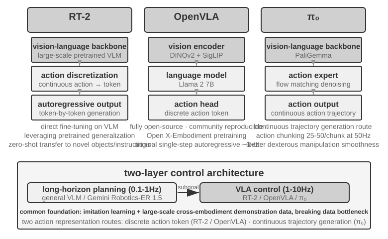
RT-2 ve OpenVLA: ayrık eylem token'ı yolu.
RT-2 bu yolu açtı: doğrudan büyük ölçekli görsel-dil modelleri üzerinde fine-tuning yapar, robotun sürekli eylemlerini token'lara ayrıklaştırır ve tıpkı metin üretir gibi bunları tek tek otoregresif olarak çıkarır; böylece ön eğitimli modelin genelleme yeteneğinden yararlanarak yeni nesnelere ve yeni talimatlara zero-shot aktarımı iyileştirir. OpenVLA ise RT-2'nin eylem temsili şemasını sürdürdü; dil modeli ile görsel kodlayıcıyı tek bir mimaride birleştirir, girdi olarak görüntü ve yazılı talimat alır, çıktı olarak eylem token'ları üretir. Eğitim iki aşamalıdır: önce büyük ölçekli, platformlar arası Open X-Embodiment veri kümesinde (20'den fazla robot platformundaki gerçek manipülasyon gösterimlerini kapsar) ön eğitim yapılarak genel manipülasyon bilgisi öğrenilir ("kavrama", "yerleştirme" gibi eylem kalıpları farklı robotlar arasında ortaktır), ardından belirli bir platform için az miktarda veriyle fine-tuning yapılır. Eylem temsilleri özünde aynı olduğuna göre, ikisi arasındaki asıl fark açıklık ve mühendislik tercihlerindedir: RT-2 ve eğitim verisi Google'ın içindedir, OpenVLA ise tamamen açık kaynaktır — açık kaynak bir omurga model (Llama 2 artı görsel kodlayıcı) ile herkese açık bir veri kümesi, tüm topluluğa ilk kez bunun üzerine yeniden üretim ve iyileştirme yapma imkânı verdi.
Action chunking: VLA alanında ortak kullanılan frekans telafisi tekniği.
LLM çıkarımının gecikmesi olduğundan, VLA'nın kontrol frekansı geleneksel robot kontrolünün gerektirdiğinin çok altındadır (geleneksel robot kontrolü genellikle 50-1000 Hz kontrol frekansı ister, VLA'nın tek çıkarımı ise yalnızca 1-10 Hz dolayındadır — aradaki fark iki büyüklük mertebesine ulaşabilir). Orijinal OpenVLA bu sorunun tipik örneğidir: her çıkarımda yalnızca tek bir eylem üretir (yaklaşık 6 Hz'lik tek adımlı otoregresif tahmin) ve hareketlerinin takılması onun en çok eleştirilen eksiği olmuştur. Action chunking (eylem parçalama) tam da bu farkı kapatmak için doğmuş genel bir tekniktir — ilk kez ACT (Zhao ve ark., 2023) tarafından önerildi, sonra π₀ ve OpenVLA-OFT gibi modellerce yaygın olarak benimsendi: model her çıkarımda tek bir eylem değil, gelecekteki kısa bir zaman dilimine ait eylem dizisini bir seferde üretir (π₀'ın tipik yapılandırması örnek alınırsa, bir seferde yaklaşık 0,5-1 saniyelik bir eylem parçası, yani 50 Hz kontrol frekansında 25-50 eylem); kontrol iş parçacığı bunları yüksek frekansla sırayla yürütürken model arka planda bir sonraki partiyi asenkron olarak üretir. Modelin çıkarım süresi bu partinin yürütme süresinden kısa olduğu sürece robot sürekli ve akıcı hareket edebilir — tıpkı video ön belleğe alma gibi: sonraki içerik önceden yüklendiği için oynatma takılmaz.
π₀: sürekli yörünge üretimi yolu.
Eylem temsilindeki asıl ayrım RT-2 ile OpenVLA arasında değil, ayrık token ile sürekli yörünge üretimi arasındadır. π₀ ikinci yolu temsil eder: ayrık eylem token'larını tek tek tahmin etmek yerine, flow matching (akış eşleme; difüzyon modelleriyle aynı kökten gelen sürekli bir üretim yöntemi) kullanarak rastgele gürültüden başlar, çok adımlı yinelemeli bir "gürültü giderme" süreciyle doğrudan pürüzsüz ve sürekli bir eylem yörüngesi üretir. Bu temsil, action chunking ile doğal biçimde birleşir ve becerikli manipülasyon gibi hareket hassasiyeti ile akıcılığın kritik olduğu görevlerde daha iyi sonuç verir. Bir benzetme yapmak gerekirse: ayrık token yolu bir menüden adım adım "5 derece sola", "3 santimetre ileri" seçmeye benzer; sürekli yörünge yolu ise ressamın önce tüm eğriyi kabaca çizip sonra fırça darbeleriyle son hâline getirmesine benzer.
Sim2Real Transfer: Simülasyondan Gerçekliğe Uzanan Uçurum¶
Bölüm 6'daki simülasyon ortamları alt bölümü, sim-to-real gap'in (gerçeklik farkı) kaynağını ve domain randomization'ın (alan rastgeleleştirme) buna nasıl çözüm ürettiğini zaten açıklığa kavuşturmuştu; burada tekrar etmiyoruz — tek cümleyle özetlemek gerekirse: simülasyon gerçek fiziği, görüntüyü ve donanım özelliklerini tam olarak yeniden üretemediği için, eğitim sırasında bu parametreler geniş bir aralıkta rastgele karıştırılır ve politikanın her türlü değişime dayanıklı, genel bir temsil öğrenmesi zorlanır (Şekil 9-12). Aşağıda yalnızca bu ilkenin gerçek bir robot kolunda nasıl hayata geçtiğine bakacağız.
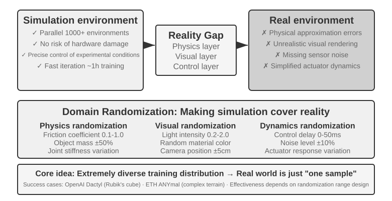
Bu yolun çok sayıda başarılı örneği var: OpenAI'ın robot eliyle becerikli manipülasyonu (Dactyl projesi el içinde küp yeniden yönlendirmeyi gerçekleştirdi; devamındaki çalışma otomatik alan rastgeleleştirmesi (ADR) yardımıyla tek elle Rubik küpü çözmeyi başardı) ve ETH Zürih'in ANYmal'i (dört ayaklı robotun kar, moloz gibi karmaşık arazi koşullarında sağlam biçimde yürümesi) bunlar arasındadır.
Bu bölümde asıl tamamlanması gereken şey, domain randomization'ı gerçek bir makineye indirirken kaçınılmaz olan iki mühendislik halkasıdır. Birincisi rastgeleleştirme aralığının kalibrasyonu: aralık göz kararı belirlenemez; çok dar olursa gerçek değişimleri kapsamaz, çok geniş olursa eğitimi zorlaştırır ve "her şeye idare eder ama hiçbirinde iyi olmayan" alt optimal bir politika ortaya çıkar. Pratikte genellikle önce gerçek ortam verisinden kilit parametrelerin dağılımı ölçümle kalibre edilir (sürtünme katsayısının, motor tepki gecikmesinin gerçek dağılımı gibi) ve örnekleme bu aralıkta yapılır; simülasyonda eğitilen politika gerçek makinede belirgin biçimde puan kaybediyorsa rastgeleleştirme aralığı kademeli olarak genişletilir, ta ki sim-to-real gap kabul edilebilir bir düzeye inene kadar. İkincisi görsel hizalamadır: simülasyondaki ve gerçekteki kamera pozu (konum ve yönelim) hassas biçimde kalibre edilir (ortam hizalaması) ve gerçekte çekilmiş arka planlar simülasyon render'ına rastgele yerleştirilir (greenscreen arka plan değişimi); böylece simülasyon görüntüsü gerçek makinenin gördüğüne olabildiğince yaklaşır — bu iki adımı Deney 9-10 somut olarak gösterecek.
Deney 9-10 ★★★: RGB Tabanlı Zero-Shot Sim2Real Robot Kolu Kavraması
LeRobot + ManiSkill simülatörünü kullanarak yalnızca RGB kamera görüntüsüyle (derinlik sensörüne ya da kuvvet sensörüne dayanmadan) eğitin, ardından zero-shot olarak (hiçbir ek ayar yapmadan) doğrudan gerçek bir SO100 robot koluna dağıtın. Beş adımlı süreç:
- Ortam hizalaması: Simülasyondaki ve gerçek ortamdaki kamera konumlarını ayarlayın, görselleştirme üst üste bindirmesiyle iki taraftaki görüntülerin hizalandığını doğrulayın
- Arka plan değişimi (greenscreen): Gerçek ortamda çekilen arka plan görüntüsünü rastgele kırparak simülasyon render'ının üzerine bindirin, böylece simülasyon görüntüsünün arka planı gerçeğe yaklaşsın
- Domain randomization: Robotun rengini, nesne dokularını, aydınlatma koşullarını, kamera görüş açısını vb. parametreleri rastgeleleştirin
- RL eğitimi: PPO algoritmasıyla büyük ölçekli paralel simülasyon ortamlarında, simülasyondaki başarı oranı >%90 olana kadar eğitin
- Gerçek dağıtım: Gerçek robotta zero-shot olarak doğrudan kavrama görevini başarıyla tamamlayın
Başarının kilit unsurları: hassas ortam hizalaması + görsel alan rastgeleleştirmesi + fiziksel parametre rastgeleleştirmesi; üçünden biri eksik olursa olmaz. Sınırlılık: gerçek nesnenin biçimi, boyutu veya malzemesi eğitim dağılımının dışına çıktığında başarı oranı belirgin biçimde düşer.11
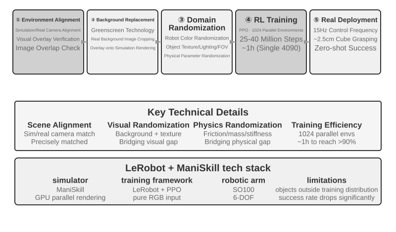
Bölüm Özeti¶
Üç senaryo yüzeyde birbirinden çok farklı görünüyor, ama gecikme ve çok modluluk biçimindeki iki engel hepsinin peşini hiç bırakmıyor. Ses; seri boru hattından uçtan uca ve full-duplex mimarilere, birbirinden ayrı hızlı-yavaş düşünmeden "düşünürken konuşma"ya uzanan bir evrim yolunu şimdiden katetti. Computer Use'un OSWorld gibi benchmark'lardaki doğruluğu insan seviyesine yaklaştı, ama işlem adımlarının insandan belirgin biçimde fazla olması ve adım sürelerinin görev ilerledikçe sürekli artması biçimindeki verimlilik farkının sistematik bir çözümü hâlâ yok. Robotikte ise ağırlıklı olarak görsel geri bildirime dayanan manipülasyon görevlerinde darboğaz donanımdan VLA kontrol katmanının görevler arası genelleme yeteneğine kaydı (dokunsal algılama, becerikli eller vb. hâlâ aşılamamış donanım eksiklikleridir). Bir sonraki bölüm bakış açısını birden fazla Agent arasındaki iş birliğine çevirecek; orası bambaşka bir boyutun zorluğudur.
Düşünce Soruları¶
- ★★ Sesli Agent'ların uçtan uca modeli ASR-LLM-TTS zincirini tek bir modelde birleştirir; gecikmeyi düşürür ama modülerliği kaybeder. Uçtan uca model bir halkada (örneğin konuşma tanımada) hata yaparsa, hata ayıklamak ve düzeltmek seri boru hattına göre çok daha zordur. Uçtan uca bir sesli Agent'ın gözlemlenebilirlik (observability) sistemini nasıl tasarlardınız?
- ★ Step-Audio R1, MPS çift beyin mimarisiyle "düşünürken konuşma"yı gerçekleştiriyor. Ama insanlar "düşünürken konuşurken" sık sık iyi düşünülmemiş şeyler söyler, kendini düzeltir ya da dolgu sözcükleri kullanır. Agent'ın "düşünürken konuşması" insandaki bu özellikleri taklit etmeli mi?
- ★★ SoM (Set-of-Mark) ve onun yapısal türevi (DOM öğe indeksleme), Computer Use'un görsel konumlandırmasını açık uçlu koordinat tahmininden kapalı uçlu ID seçimine dönüştürür; ama her ikisi de önce arayüz öğelerinin tespit edilip işaretlenmesini gerektirir — ister segmentasyon modeliyle ister DOM'la olsun. Arayüzde standart dışı kontroller veya dinamik olarak değişen öğeler varsa, işaretleme eksik ya da hatalı olabilir. Bu durumda koordinat tahminine geri dönmeli mi?
- ★★ XLeRobot gibi bin dolar seviyesindeki robot platformları teleoperasyon verisi toplamayı ucuzlattı. Ama teleoperasyon verisinin kalitesi büyük ölçüde operatörün becerisine bağlıdır. Deneyimsiz bir operatörün sağladığı veri, VLA modelinin eğitimini nasıl etkiler? Veri toplama aşamasında düşük kaliteli veriyi otomatik olarak nasıl elerdiniz?
- ★★★ Bu bölüm ses, Computer Use ve robotik olmak üzere üç etkileşim biçimini kapsadı. Bu üç biçimin ortak eğilimi, seri boru hattından uçtan uca modellere doğru evrilmek. Bu eğilim sürerse, beş yıl sonraki Agent etkileşim katmanı nasıl görünecek?
- ★★★ Bugünkü Computer Use, "ekran görüntüsü → eylem → ekran görüntüsü" biçiminde ayrık bir döngüyle çalışıyor ve her gözlem tek bir durağan kareden ibaret. Oysa insanın ekran algısı süreklidir — animasyonun oynadığını görebilir, yükleme ilerlemesini izleyebilir, video içeriğini anlayabiliriz. Bu da bugünkü Computer Use'un zamansal görsel anlama gerektiren görevleri kesinlikle yapamayacağı anlamına geliyor. Sürekli görsel akış anlamayı destekleyecek biçimde algı katmanını nasıl yeniden tasarlarsınız?
- ★★ DOM/Accessibility Tree öğe indekslemesi standart Web uygulamalarında belirgin sonuç veriyor, ama gitgide daha çok yazılım arayüzü (Canvas/WebGL render'ı, platformlar arası kendi çizen kontroller) erişilebilir yapısal bilgi sunmuyor ve geriye yalnızca görsel işaretleme ya da koordinat tahmini kalıyor. Sizce Computer Use saf görsel yola mı oynamalı, yoksa yapısal ve görsel iki yolu birden mi sürdürmeli? İki yolu birden sürdürmenin maliyeti ve getirisi nedir?
- ★★ VLA modelleri action chunking (eylem parçalama) kullanıyor — metinde anlatıldığı gibi, π₀'ın tipik yapılandırması 50 Hz frekansta 25-50 gelecek eylemi bir seferde üretmektir — ve böylece çıkarım gecikmesini yürütme süresinin içine saklıyor. Ama yürütme sırasında ortam ani biçimde değişirse (örneğin nesne yerinden alınırsa), önceden üretilmiş eylem dizisi geçersizleşir. Action chunking'in verimlilik avantajı ile ortam değişimlerine tepki hızı arasında dengeyi nasıl kurarsınız?
- ★★★ Bu bölümdeki üç senaryonun (ses, Computer Use, robotik) hepsi "algılama-düşünme-eylem" döngüsünün gecikme sorunuyla yüzleşiyor ve hepsi hızlı-yavaş düşünmenin paralelleştirilmesi yönünde evriliyor. Ses senaryosunda bu, "yanlış söylediysen sonra düzelt" biçiminde; Computer Use senaryosunda "önce tıkla sonra bak" biçiminde; robotik senaryosunda ise "bir adım at sonra bak" biçiminde ortaya çıkıyor. Hızlı düşünmeye dayanan bu eylemlerin geri döndürülemez sonuçlara yol açmamasını nasıl garanti edersiniz?
-
OpenAI. Introducing GPT-Live. 2026-07-08. https://openai.com/index/introducing-gpt-live/ — Bu kısımdaki "kaskad / tur tabanlı / full-duplex" üçlü ayrımı, bu yazının ChatGPT sesinin üç kuşaklık evrimine dair özetinden gelir; metindeki "uçtan uca tam modlu (Omni)", oradaki "turn-based voice models" kategorisine karşılık düşer. ↩
-
Tur kararını tanıyıcının içine gömme ve "etiketlerin tanrı bakışı" teşhisi için bkz. Li, Bojie and Noah Shi. The Trade-off Was in the Labels: Causal Supervision for Turn-Aware Streaming ASR. 2026 (yayımlanacak). ↩
-
Kaskad ile uçtan uca arasındaki doğruluk üstünlüğünün ne zaman tersine döndüğü ve bu yönün görevin niteliğine (ara temsilin göreve ilişkin bilgiyi yeterince taşıyıp taşıyamadığına) bakarak nasıl öngörülebileceği; modaliteler arası eksiksiz ölçüm için bkz. Li, Bojie and Noah Shi. The Cascade Gap: When and Why Self-Cascades Help Multimodal Agents. 2026 (yayımlanacak). ↩
-
Thinking Machines Lab, "Interaction Models: A Scalable Approach to Human-AI Collaboration," 2026-05. https://thinkingmachines.ai/blog/interaction-models/ ↩
-
İki dondurulmuş model arasında yalnızca bir gizli uzay köprüsü eğitmenin ve "ne zaman yavaş bir akıl hocası çağırmaya değdiğinin" eksiksiz analizi şurada bulunabilir: Li, Bojie and Noah Shi. The Latent Bridge: A Continuous Slow-Fast Channel for Real-Time Game Agents. arXiv:2606.24470, 2026. ↩↩
-
Kapılı anahtar kare, ihtiyaç hâlinde transkripsiyon ve kareleri kalıcı metne dönüştürme biçimindeki üç bileşenin eksiksiz mekanizması ve model bazlı ablation çalışması için bkz. Li, Bojie and Noah Shi. Agent-Computer Observation Interfaces Enable Dynamic Computer Use. arXiv:2606.29472, 2026. ↩
-
Ses-işlem hızlı-yavaş ayrıştırmasının ve "düz metin sözleşmesi"nin eksiksiz tasarımı için bkz. Li, Bojie and Noah Shi. Talking While Acting: Real-Time Voice for Slow Computer-Use Agents. 2026 (yayınlanacak). ↩
-
XLeRobot, "Teleop dokümantasyonu". https://xlerobot.readthedocs.io/en/latest/software/getting_started/XLeRobot_teleop.html ↩
-
Google DeepMind, "Gemini Robotics-ER 1.5". https://deepmind.google/models/gemini-robotics/gemini-robotics-er/ ↩
-
XLeRobot, "LLM Agent kontrolü". https://xlerobot.readthedocs.io/en/latest/software/getting_started/LLM_agent.html ↩
-
LeRobot, "Sim2Real eğitimi". https://github.com/StoneT2000/lerobot-sim2real/blob/main/docs/zero_shot_rgb_sim2real.md ↩